HAC-D 用户手册
1. HAC-D 是什么
HAC-D 把集群拓扑（四种昇腾模板之一，或任意自定义描述）转换为硬件数量及各单元所带的故障类型，再转换为可用率、平均中断间隔、恢复时间、goodput 与成本，并把目标反向分配到硬件 FIT、故障管理机制与恢复上限。它以综述章节《AI 集群可靠性建模》为依据，并与一个独立的参考引擎（经审核的单训练作业 30 天离散事件仿真器）交叉校核。
1.1 原则
- 每个数字都带公式与口径。故障率是「某事件类 / 某分母 / 某层级」（例如作业级的每卡·小时硬中断）。不同事件类的量永不相加。
- 解析式优先，并带有效性标记。一阶 goodput 公式检查 τ + δ ≪ M 与 R ≪ M；标记触发时首要值切换为精确更新式。
- 假设不成立时转蒙特卡洛。非指数寿命、相关故障、有限备件池、有限窗口与静默错误走仿真；解析式结果仍显示并带差值徽标。
- 每个参数都有出处。参数库记录与方案输入带来源、年份与置信（measured、paper-reported、vendor、derived、assumed、scan-level）。
v3.7-gpu 分出）；GPU 集群实测数据作为已标注的类比保留在参数库中，因为昇腾没有公开的故障数据。1.2 架构
| 包 | 作用 | 说明 |
|---|---|---|
packages/core | 纯 TypeScript 数值核心 | 单位、数学、RBD、CTMC、修复路径、分级恢复、checkpoint 与 goodput 模型、静默错误交付（两种期末规则）、机制链（可配置梯级顺序）与机制库、带检查点上界的规划器、备件、MTTR、带损失预算的分配、敏感性、成本、带 Student-t 与 Wilson 统计的蒙特卡洛、事件计数估计故障率（Garwood）、ReMAP 事件库导入、方案 schema 与示例、参数库（635 条）、v4 拓扑模板（A2 RoCE、A3 CloudMatrix384、Atlas 950）与各单元故障类型、分配策略（最优 / MTTR 降低优先 / MTTF 提升优先）；v5 输入记录与预算原语；v6 ingest（词表、证据卡、口径归一、校验门、差异、扩展请求） |
apps/web | Vite + React 静态应用 | 中英双语、浅 / 深色，计算在 Web Worker 中；六个主页面（项目、拓扑与硬件、分配、机制库、故障库、评审），另有两个页面在「全部页面」中（方案编辑器、推理与备件） |
packages/cli | 命令行 hacd | 与 Web 应用同一套函数，输出表格或 JSON；v5 报告流水线 findings | bom | budget | methodology | prune | study；v6 输入流水线 ingest |
packages/mcp | MCP 服务 | 面向智能体的 22 个工具（评估、对比、含损失预算的分配、龙卷风、仿真、参数库、Excel、机制、账本、规划器、审核、研究、事件计数估计故障率、v4 拓扑硬件清单与分配策略） |
packages/importers | Excel 导入 / 导出；v6 工作表 | 公式方法识别、拓扑提取、对账、含公式的工作簿导出；v6：Markdown 工作表规范 hacd-worksheet-1 与输入记录的双向转换、模板、电子表格器件表导入 |
packages/reports | 双语 HTML 报告套件 | v5 结果 / 方法 / 元件清单报告与 v6 变更评审页，均为数据的纯函数，逐字节复现 |
packages/agent | v6 抽取工作器 | OpenAI 兼容适配器（vLLM / SGLang / llama.cpp）、分块、两种提示变体、经原文落地与两遍一致才接受的证据卡、评审队列、草稿工作表 |
2. 快速开始
npm install # Node ≥ 20，npm workspaces npm run dev # Web 应用 http://localhost:5173 npm test # 840 核心 + 52 导入器 + 36 抽取工作器 + 28 报告 + 7 命令行测试（含 530 个黄金向量） node --import tsx packages/cli/src/main.ts examples # 命令行 claude mcp add hacd -- node --import tsx packages/mcp/src/server.ts # MCP 服务
Web 应用的主页面是拓扑与硬件：选择模板卡片（A2、A3 · CloudMatrix384、Atlas 950、Atlas 960E，或几何由记录定义的通用 UB 超节点）与规模（内置 10k / 100k / 200k / 500k 或任意 N）；硬件表、各单元故障类型、指标与「可靠性」页签在每次编辑后自动重算，没有「重新计算」步骤。应用打开时显示项目页（§3.4）：列出全部项目——项目 = 方案 + 页面设置；内置六个项目——四种拓扑模板，加上来自报告记录的 SuperPoD Flex / UBL128 与 Atlas 800T A3 服务器集群（v5.3），见 §15.3；规模是参数，不另设示例——页眉显示当前项目名称，点击即打开项目页。页眉有语言（中文 / EN）与主题（自动 / 浅色 / 深色）开关。每次修改都自动保存在浏览器本地存储；导出 JSON、导入 JSON 与重置为模板都在项目页。
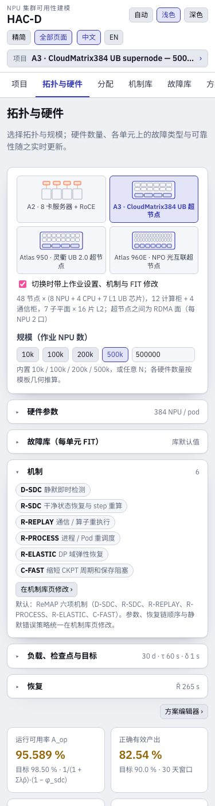
精简模式。应用默认只显示主流程（项目 → 拓扑与硬件 → 分配 → 机制库 → 故障库 → 评审）；页眉的全部页面开关可加回方案编辑器与推理与备件页。所有功能在命令行与 MCP 中保持可用。ReMAP。scripts/remap-bridge.ts 在 HAC-D 方案上运行 ReMAP 内嵌的专家引擎并与解析式对比，hacd import-remap 把 ReMAP 或参考工具的事件库转为方案（见 docs/REMAP_INTEGRATION.md）。
3. 概念与口径
3.1 度量
| 度量 | 定义 | 页面 |
|---|---|---|
| 可用率 A（补偿后） | 系统结构处于可用态的稳态概率，计入冗余、倒换成功率、自动恢复与亚健康策略 | 设计评审 |
| 原始可用率 | 同一结构，但每个单元故障都算停机、仅人工修复、不计冗余；补偿瀑布逐步加入各机制 | 设计评审 |
| 严格 / 宽松 / 性能加权 | 亚健康计为不可用 / 计为可用 / 按性能因子加权 | 设计评审 |
| MTBF、等效 MTTR | 由稳态故障频率得 A / ν_sys 与 (1 − A) / ν_sys | 设计评审、方案编辑器 |
| MTBI | 作业平均中断间隔 1 / Σ nᵢλᵢ（加上已检出亚健康单元的隔离） | 指标条（MTBF_hw 的注释） |
| MTBF_hw、MTTR_hw（公式 1） | A_op = (1 − φ) / (1 + (Σλᵢt̄ᵢ + F)/3600) 的硬件侧：MTBF_hw = 1 / Σλᵢ，只计硬中断类；MTTR_hw = Σλᵢt̄ᵢ / Σλᵢ，经机制链按速率加权的平均暂停；隔离、已检出静默错误与误报（F）另计，不加入 λ——即结果报告表 1 的口径 | 指标条、分配 › 策略（报告预算）、结果报告 |
| 名义 / 降额 | 名义 = 每个已应用机制的参数按机制库给出的值（厂商 / 论文目标值，标注 assumed）；降额 = 同一设计，但每个已应用机制的参数与恢复杠杆按覆盖率 −5 pt、成功率 −8 pt、时间 ×1.5、发生率改善 ×0.5 变差——这是对参数不确定性的约定，不是实测。目标须两者都满足，起决定作用的是降额值。方案自身的 FIT 与恢复基线不降额，所以没有机制库机制的设计两值相等 | 指标条、分配、结果报告 |
| 恢复时间 R(N) | 从中断到恢复有效训练的平均时间，不含重算；流水线、分级或混合 | 可靠性页签 |
| 运行可用率 A_op | 运行时间占比 1 / (1 + λ_rb R_rb + λ_p R_p)（保存与重算计为运行）；以名义 / 降额两值显示 | 指标条、分配、方案对比 |
| goodput（一阶、精确更新、乘积、Daly） | 周期 checkpoint 下单位墙钟时间的有效计算，§12.5 | 可靠性页签 |
| 有效 goodput | 首要 goodput × (1 − P_blocked) × φ_job × (1 − ℓ_local)：计入备机、亚健康与弹性域损失 | 可靠性页签、方案对比 |
| 正确有效产出（交付 goodput） | 作业窗口结束时保留的正确进度 ÷ 窗口长度，扣除静默错误回滚与期末判废 | 指标条、分配、机制 |
| 容量可用率（推理） | N+k 池中至少所需副本数可用的概率 | 推理服务 |
3.2 故障类别
每个部件类可建模三种表现，各有自己的口径与处理方式：
- 中断：单元停止；作业被检测为停机，经机制链与全局 checkpoint 恢复，除非由不回滚的机制处理，否则回退到最近 checkpoint。
- 亚健康（fail-slow）：单元以性能因子 φ 持续运行一段时间；同步作业被拖慢（掉队者定律）；策略为容忍或隔离（已检出的单元先保存进度再切出）。
- 静默错误（SDC）：状态被污染而无中断；即时检测捕获一部分，漏检的污染在兜底时延后被发现并回退到最后一个干净 checkpoint；窗口结束时仍带错的状态判废。
3.3 置信与出处
每个故障率或时间可带 provenance（来源、机构、年份、URL、算式）与置信标签。参数库（§8）使用同样的标签；参考示例把借用的占比与目标值标为 assumed。规划器（§6.3）与分配策略（§7.1）对机制参数降额；经典分配方法按置信加权可行性。v4 各单元的故障类型（§4.3）是目录先验值换算到硬件单元，仍标为 assumed。v6 由内部器件表归一得到的失效率带映射表的算式与按政策给出的置信——任一影响因子或来源为假设即 assumed，否则 derived；模型自身的置信从不采用（§15.5）。
3.4 项目页
项目 = 方案 + 页面设置：分配页的页签、策略表单与经典方法的输入；机制库页的页签、参与归因的机制、价值函数、参数覆盖、临时假设开关、工作量与审核选择；拓扑页的页签与「切换时携带」复选框；项目页对比页签的项目集合、评审页敏感性页签的指标，以及项目页与评审页的页签。重新打开项目即恢复全部设置；结果与报告重新计算，不保存。每次修改立即保存在浏览器中（v5.1；早期版本的方案列表会一次性迁移为项目，页面设置取默认值）。
项目页是第一个页签，精简模式下也显示，是唯一的载入与保存入口。表格列出每个项目的模板、NPU / 负载、来源（内置或用户）与最后修改时间，操作有打开（激活并转到拓扑页）、重命名（行内）、复制、导出 JSON、重置为模板（内置项目）与删除（最后一个项目不能删）。表格下方：从四种模板之一按内置规模新建项目，导入 JSON（项目包 {"version": "hacd-project-1", "scenario", "settings"} 或单独的方案 JSON；旧项目包缺少的设置取默认值），以及恢复内置项目。页眉显示当前项目名称，点击即打开本页。
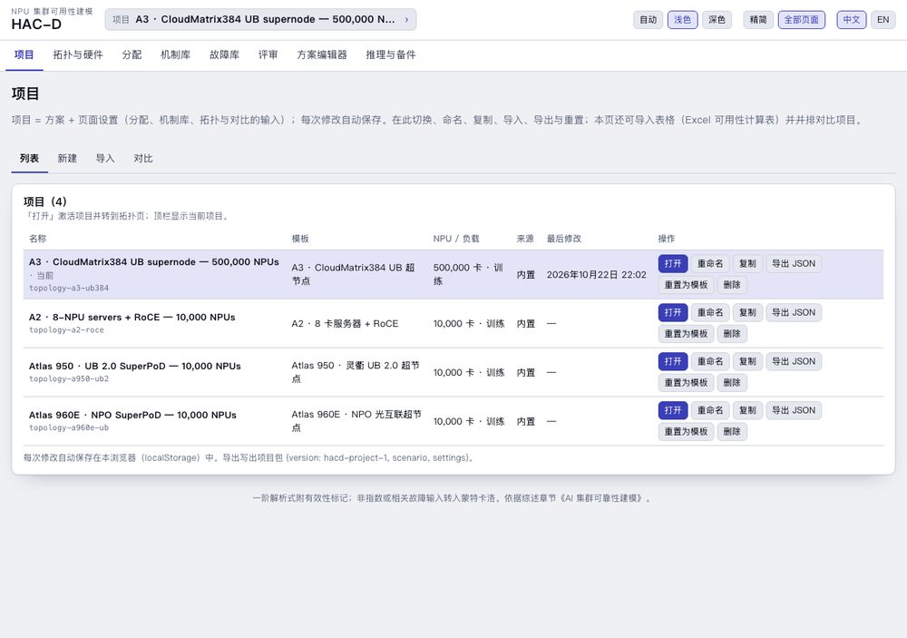
v5.2：项目页有四个页签——列表（打开、重命名、复制、删除、导出、重置为模板）、新建（由模板按内置规模新建）、导入（项目或方案 JSON、重置内置项目，以及原导入页的 Excel 流程，§10.1）、对比（原对比页的项目选择与 KPI 表，§10.2）。
4. 拓扑与硬件页
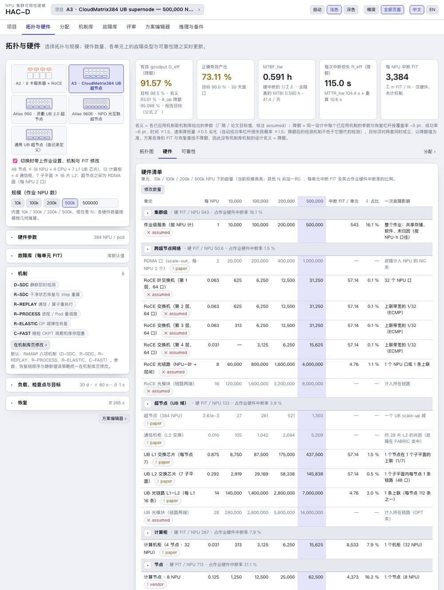
首页回答：在这个拓扑、这个规模下，有哪些硬件单元、各有多少、各带哪些故障类型，以及在默认机制下得到什么结果。输入位于左侧可折叠分组，输出位于右侧指标条下的四个页签（拓扑图、硬件、可靠性、分配）。每次编辑即时重算。
4.1 五种拓扑模板
| 模板 | scale-up 域 | 几何 | 来源与置信 |
|---|---|---|---|
| A2 · 8 卡服务器 + RoCE | 8 | Atlas 800T A2 服务器：8 × 昇腾 910B（HCCS 全互连）、4 × 鲲鹏 920、8 × 200GE RoCE 口由 NPU 直出；每柜 8 台 = 64 NPU；RoCE 折叠 Clos 为参数面 | 产品页（厂商）；机柜密度由 Atlas 900 A2 PoD（每柜 32 颗鲲鹏 920）推得；交换机 64 口、无收敛、每链路两个光模块为假设 |
| A3 · CloudMatrix384 | 384 | 48 节点 ×（8 NPU + 4 CPU + 7 片 L1 UB 芯片），12 计算柜 + 4 通信柜，7 子平面 × 16 片 L2 × 48 口，每片 L1 16 条链路（每超节点 5,376 条）；RDMA scale-out 面，每 NPU 2 口 | arXiv 2506.12708 §3.3（论文）；每链路两个光模块与 scale-out Clos 为假设 |
| Atlas 950 · UB 2.0 SuperPoD | 1,024（可选 8,192） | v4.2，按产品页现行规格：16 计算柜 + 4 灵衢互联柜；每计算柜 64 NPU（8 托盘 × 8）与 16 颗鲲鹏 950；柜内 2D 全互联（每柜 448 条电链路、72 片低阶 UB 交换）；每 NPU 2 条 800G 光链路上联一层 128 口 UB 交换（Clos；每超节点 16 台、4,096 个光模块）；超节点之间每 NPU 2 × 400G UBoE，两平面三层 Clos（128³ / 4 = 524,288）。超节点形态可切换为 8,192 卡路线图形态（128 + 32 柜、128 台交换）、UB-Mesh 论文的 4D 网格（每 8K 64 台 HRS）或 v4.1 的 CloudMatrix384 两级拷贝 | 产品页、HC2025 主题演讲、昇腾 950 白皮书（厂商）；LightCounting 对 WAIC 2026 整机的拆解（分析师）；Hot Chips 2025 与 UB-Mesh（论文）；LRS 数量、交换端口数与 scale-out 平面为假设 |
| Atlas 960E · NPO 超节点 | 4,032（名义 4,096） | v4.2：56 计算柜 + 14 灵衢互联柜，每柜 9 刀片 × 8 NPU 与 18 颗 CPU；柜内 LinkBlade（每柜 5 片，假设）；每超节点 126 台跨柜 LinkDevice（176 × 1.6 Tb/s，由每 NPU 2.2 TB/s 推得）；NPO 光互联（每 4,096 卡 5,500 个 Hi-ONE 引擎替代 48,000 个 800G 模块，按 800G 等效链路计）；scale-out 四平面 × 两层 1,024 口交换，至 512,000 卡（125 个超节点） | HC2026 发布与主题演讲（厂商）；柜数拆分来自单一媒体报道（智东西，扫描级）；刀片芯片数与 scale-out 端口为假设 |
| 通用 UB 超节点（由记录定义） | 由记录给出（占位 1,024） | v5.4：面向非公开产品的超节点。几何的每个值来自拓扑记录 / 工作表；四种 UB 互联形态及其计数规则都可用（两级 L1/L2、柜内全互联 + 光 Clos、UB-Mesh 4D、LinkBlade + LinkDevice）；没有记录时页面显示占位的 1,024 NPU 两级超节点（16 + 4 柜、每柜 8 节点 × 8 NPU、每节点 2 CPU），Findings 报告的叠加图按记录绘制。首个记录：a960，HC2025 路线图的 Atlas 960 超节点——15,488 NPU、220 柜（厂商路线图），按 176 + 44 柜、每柜 11 托盘 × 8 NPU、Atlas 950 的互联形态拆分（假设）；HC2026 已把该产品改为 4,096 NPU，即 960E 记录 | 本身没有来源：取记录的出处字段；占位值全部为假设 |
新单元沿用 CloudMatrix384 对应单元的 FIT（按单元等价，假设）：每片交换芯片（LRS、UB 交换、HRS、LinkBlade、LinkDevice）按一片 UB 芯片计（57.1 FIT），每条光链路按一条 L1–L2 链路计（4.76 FIT）；柜内电链路与 NPO 光引擎只计数。证据、对早期稿的复核以及计数与公开数字的核对见综述《昇腾下一代集群架构综述（复核与扩展版）》。
点击卡片切换模板。勾选切换时带上作业设置、机制与 FIT 修改（默认）时，当前设计迁移到另一拓扑：NPU 数、负载、恢复、静默错误策略、目标、已应用机制（按原顺序与参数重新应用）以及两个模板都有的故障类型的 FIT 修改；硬件取新模板。每个模板在页顶列表中有自己的方案（topology-a2-roce、topology-a3-ub384、topology-a950-ub2、topology-a960e-ub、topology-ub-generic）；非模板生成的方案（参考目录、早期昇腾示例）按其自身数量显示，并有提示。
4.2 规模与硬件数量
规模按钮设定作业 NPU 数（10k、100k、200k、500k，或在输入框中填任意 N；自动生成的方案名随规模更新）。数量按模板几何推算：节点 = ⌈N ÷ 每节点 NPU⌉，CPU = 节点 × 每节点 CPU，计算柜 = ⌈节点 ÷ 每柜节点⌉；超节点模板中，超节点 = ⌈节点 ÷ 每超节点节点⌉，L1 = 节点 × 每节点 L1，L1–L2 链路 = L1 × 每 L1 链路。未满的最后一个超节点，其 L2 芯片与通信柜按已部署节点计算（按需：每子平面 ⌈子平面链路数 ÷ L2 端口数⌉ 片，允许 L1–L2 并行链路；整个超节点则按整柜采购计）。scale-out 网络是覆盖各 NPU 端口的折叠 Clos：交换机端口数 k、叶收敛比 o 时，叶交换机有 d = ⌊k·o/(1+o)⌋ 个下行口，t 层可承载 d·k·(k/2)^(t−2) 个端口；第一层 ⌈P/d⌉ 台，中间层 ⌈H/(k/2)⌉，顶层 ⌈H/k⌉，H = ⌈P/o⌉；k = 64 时 10,000 个端口需三层（313 + 313 + 157 台，30,000 条链路），100,000 个端口需四层（3,125 + 3,125 + 3,125 + 1,563 台，400,000 条链路）。
| NPU 数 | A2：服务器 · CPU · 机柜 · RoCE 交换机（层数）· 链路 | A3：超节点 · 节点 · 计算柜 + 通信柜 · L1 · L2 · UB 链路 |
|---|---|---|
| 10,000 | 1,250 · 5,000 · 157 · 783 （3）· 30,000 | 27 · 1,250 · 313 + 105 · 8,750 · 2,919 · 140,000 |
| 100,000 | 12,500 · 50,000 · 1,563 · 10,938 （4）· 400,000 | 261 · 12,500 · 3,125 + 1,042 · 87,500 · 29,169 · 1,400,000 |
| 200,000 | 25,000 · 100,000 · 3,125 · 21,875 （4）· 800,000 | 521 · 25,000 · 6,250 + 2,084 · 175,000 · 58,338 · 2,800,000 |
| 500,000 | 62,500 · 250,000 · 7,813 · 54,688 （4）· 2,000,000 | 1,303 · 62,500 · 15,625 + 5,209 · 437,500 · 145,838 · 7,000,000 |
| NPU 数 | Atlas 950（1,024 卡超节点）：超节点 · 计算柜 + 互联柜 · 柜内 + 超节点层交换 · 光链路 · scale-out 交换（层 × 平面） | Atlas 960E：超节点 · 计算柜 + 互联柜 · LinkBlade + LinkDevice · 800G 等效链路 · scale-out 交换（层 × 平面） |
|---|---|---|
| 10,000 | 10 · 157 + 40 · 11,304 + 157 · 20,000 · 786（3 × 2） | 3 · 139 + 35 · 695 + 313 · 58,594 · 120（2 × 4） |
| 100,000 | 98 · 1,563 + 391 · 112,536 + 1,563 · 200,000 · 7,816（3 × 2） | 25 · 1,389 + 348 · 6,945 + 3,125 · 585,938 · 1,176（2 × 4） |
| 200,000 | 196 · 3,125 + 782 · 225,000 + 3,125 · 400,000 · 15,626（3 × 2） | 50 · 2,778 + 695 · 13,890 + 6,250 · 1,171,875 · 2,348（2 × 4） |
| 500,000 | 489 · 7,813 + 1,954 · 562,536 + 7,813 · 1,000,000 · 39,066（3 × 2） | 125 · 6,945 + 1,737 · 34,725 + 15,625 · 2,929,688 · 5,864（2 × 4） |
全互联与刀片拓扑（v4.2）：每柜电链路 = t·C(p, 2) + p·C(t, 2)（8 托盘 × 8 NPU 为 448 条），超节点层交换 = ⌈超节点 NPU × 每 NPU 上联 ÷ 端口数⌉（最后一个超节点按实际 NPU），光链路 = NPU × 每 NPU 链路数，NPO 引擎 = NPU × 每 NPU 引擎数；多平面 scale-out 每平面是一个 Clos，端口数 ⌈N × 每 NPU 端口 ÷ 平面数⌉。
这些数量是用 Python 独立计算的黄金向量（packages/core/test/golden/compute_golden_v4.py）。
用户数量（v4.3）。要直接设定某一行的数量，点硬件清单上方的修改数量，在当前规模一列输入数字；节点、CPU、机柜、超节点、互联柜、交换芯片、链路、光模块、NPO 光引擎、备份 NPU 与 scale-out 各行均可修改（NPU 与作业级两行随规模变化，不可改）。用户数量只替换该行——其他行仍按几何推算，UB 交换与 scale-out 交换的合计随之更新——并在其他规模按每 NPU 比例缩放：在 10,000 NPU 输入 200 台超节点层交换，100,000 NPU 时为 2,000 台。评估器、指标、拓扑图与分配使用同一组数量。用户数量以橙色显示，悬停显示几何推算值，并列在表下注释中；↺ 恢复单行，清除恢复全部。与拓扑不符的用户数量（例如全互联拓扑下的 L1 芯片数、只有三层 Clos 时的第四层）会被忽略、注明，并在表上方列出，可点删除。scale-out 各层的用户数量保持其角色：在顶层（或叶层）输入的数量，在层数不同的规模上仍作用于顶层（或叶层）。切换超节点形态或 UB 互联拓扑时，超节点各行的用户数量会被清除（它们属于原来的设备），节点、CPU、机柜与 scale-out 的用户数量保留。在方案编辑器中改为非模板单元口径的部件类（固定数量，或按 zone / 超节点 / L2 芯片 / 光模块计）显示为只有故障率的其他部件一行，使表的合计始终等于评估器的硬件中断率；备件模型与蒙特卡洛也使用同一组数量。方案文件中为 topology.countOverrides（{ "ubPodSwitch": { "count": 200, "npus": 10000 } }）；命令行用 hacd topology a950-ub2 --count ubPodSwitch=200,cabinet=170，MCP 的 topology_bom 用 counts。
4.3 各硬件单元的故障类型
审核参考目录的 54 个事件（18 个故障域 × 中断 / 亚健康 / 静默）给出每卡·小时的业务影响 FIT。v4 把每个事件挂到它所属的硬件单元上，并在 CloudMatrix384 几何下换算（这里目录与论文的数量一致）：每单元 FIT = 每卡 FIT × 384 ÷ 一个 384 卡超节点中该单元的数量。NPU 承载 CORE、SRAM、IOD、MODULE、MEMT、MEMP 与 NIC（每 NPU 1,676.7 中断 FIT）；作业级服务承载 STORAGE 与 UNKNOWN（每 NPU 543.3）；CPU 承载本域（每颗 333.3）；节点承载 DDR、SSD、BOXIO 与 MGMT（每节点 4,373.3）；计算柜承载 POWER 与 COOL（每柜 8,533.3）；UB 交换芯片承载 FABRIC（每片 57.1）；UB L1–L2 链路承载 OPT（每条 4.76）。RoCE 交换机与链路沿用 UB 芯片与链路的数值作为类比（假设；没有保护的以太网叶交换机可能更差——阿里 HPN 报告每月 0.051 % 的 ToR 严重错误，约 708 FIT）。不含 scale-out 网络的 CloudMatrix384 集群精确复现按卡计的目录；A2、Atlas 950 与 Atlas 960E 因硬件构成不同而不同：
| 每 NPU 中断 FIT，10,000 NPU | A2 | A3 · CM384 | Atlas 950 | Atlas 960E |
|---|---|---|---|---|
| NPU · 作业级 · 节点 | 1,676.7 · 543.3 · 546.7 | 相同 | 相同 | 相同 |
| CPU（每 8 NPU 4 / 4 / 2 / 2 颗） | 166.7 | 166.7 | 83.3 | 83.3 |
| 计算柜（每柜 64 / 32 / 64 / 72 NPU） | 134.0 | 267.1 | 134.0 | 118.6 |
| UB 交换芯片 · UB 光链路 | — | 66.7 · 66.7 | 65.5 · 9.5 | 5.8 · 27.9 |
| scale-out 交换机 · 链路 | 4.5 · 14.3 | 8.9 · 28.6 | 4.5 · 28.6 | 0.7 · 38.1 |
| 合计 | 3,086.1 | 3,371.3 | 3,092.1 | 3,041.1 |
每个故障类型的 FIT 都可在「硬件」页签中按单元修改（中断、亚健康与静默分别修改；↺ 恢复库默认值）；修改保存在方案中，推导记为“用户值”。机柜的 FIT 不随密度增大（假设）：更密的机柜使每 NPU 的设施 FIT 减半，但一次故障影响 64 个 NPU。60 个单元故障类型只在此卡片显示；故障库页（§8）是参数库。
4.4 输入分组
- 硬件参数（随模板而变）：每柜服务器或节点数、每超节点机柜数、每节点 CPU 数；超节点形态（Atlas 950）与 UB 互联拓扑（两级 L1 / L2、柜内全互联 + 光交换 Clos、UB-Mesh 4D、LinkBlade + LinkDevice 与 NPO）；两级拓扑为每节点 L1 芯片数、子平面数、L2 芯片数与端口数、每片 L1 链路数，其他拓扑为每柜交换芯片数、每 NPU 超节点层上联数、超节点层交换端口数、每 NPU 光链路与 NPO 引擎数、4D 柜间网格与每柜备份 NPU；每链路光模块数、交换填充方式；scale-out 网络的开关，以及每 NPU 端口数、平面数、交换机端口数与收敛比。公开资料未给出的字段标为 assumed。
- 故障库：已修改的 FIT 数量、恢复库默认值、跳转故障库页。
- 机制：已应用机制以标签显示——默认为 ReMAP 六项 D-SDC、R-SDC、R-REPLAY、R-PROCESS、R-ELASTIC、C-FAST——并可跳转机制库页；参数、恢复链顺序与静默错误策略都归机制库页所有。
- 负载、检查点与目标：窗口长度、τ 与 δ（被机制接管时只读，例如应用 C-FAST 后显示“由 C-FAST 设定”）、A_op 目标与正确有效产出目标。
- 恢复（MTTR 混合）：检测覆盖率、自动检测与超时、自动尝试时间与成功率、人工时间，并给出 R̄ = T_det + T_auto + (1 − p_s)·T_manual；接管检测的机制（D-HARD）会使这些字段只读。
- 方案编辑器 ›：跳转到方案编辑器（§4.6）；载入、保存与重置已移到项目页（§3.4，v5.1）。
在已应用机制之下的每次编辑都作用于“裸”设计：先精确移除这些机制，修改后再按原顺序与参数重新应用。因此修改 FIT 不会丢失机制，被机制接管的设置仍由该机制决定。
4.5 指标条与页签
v5.3：指标条采用结果报告表 1 的口径（公式 1，§12.9）：A_op 名义 / 降额 = (1 − φ) / (1 + (Σλᵢt̄ᵢ + F)/3600) 及其目标（告警色按降额值判断，因为起决定作用的是它；两值的定义见 §3.1）、30 天窗口的正确有效产出及其目标、MTBF_hw = 硬中断类的 1/Σλ（注释保留 MTBI = 1/λ_job——它还计入已检出亚健康单元的隔离——与每日中断次数）、MTTR_hw 名义 / 降额 = 硬中断类经机制链按速率加权的平均暂停（注释保留含隔离与已检出静默错误的全部事件平均暂停），以及硬件的每 NPU 中断 FIT（Σ 数量 × 单元 FIT ÷ N，未计机制）。指标条下方一行说明名义与降额的含义。因此基于记录的项目显示的就是其结果报告「今天」一行的数字。在默认六项机制下：
| 10,000 NPU | A_op 名义 / 降额 | 正确有效产出 | MTBF_hw（MTBI） | MTTR_hw 名义 / 降额（全部事件） | 每 NPU FIT |
|---|---|---|---|---|---|
| A3 · CloudMatrix384（= 记录 cm384） | 99.908 / 99.897 % | 97.97 % | 29.7 h（29.1 h） | 93.0 / 104.4 s（94.9 s） | 3,371.3 |
| A2 · RoCE | 99.925 / 99.914 % | 97.99 % | 32.4 h（31.8 h） | 83.0 / 94.7 s（84.9 s） | 3,086.1 |
| Atlas 950（= 记录 native950） | 99.920 / 99.910 % | 97.98 % | 32.3 h（31.7 h） | 88.3 / 99.5 s（90.1 s） | 3,097.8 |
| Atlas 960E | 99.925 / 99.915 % | 97.99 % | 32.9 h（32.3 h） | 83.6 / 95.2 s（85.6 s） | 3,041.1 |
| SuperPoD Flex / UBL128（记录 ubl128） | 99.924 / 99.915 % | 97.99 % | 32.9 h（32.2 h） | 84.4 / 95.9 s（86.4 s） | 3,043.6 |
| Atlas 800T A3 服务器集群（记录 a3server） | 99.910 / 99.900 % | 97.97 % | 30.4 h（29.8 h） | 93.2 / 104.3 s（94.9 s） | 3,287.9 |
六个内置项目中四个就是昇腾报告集的架构：Atlas 950 项目采用 native950 记录的几何（跨超节点网络每 NPU 4 端口、4 平面、radix 1024，assumed）而不是模板默认值，所以其指标条等于 ASCEND_ALLOCATION_FINDINGS_950 在 10,000 卡的「今天」一行（A_op 99.920 / 99.910 %、MTBF_hw 32.3 h、MTTR_hw 88.3 / 99.5 s）；UBL128 与 A3 服务器集群出于同一目的加入（v5.3）。A2 · RoCE 与 Atlas 960E 没有记录，也没有结果报告。
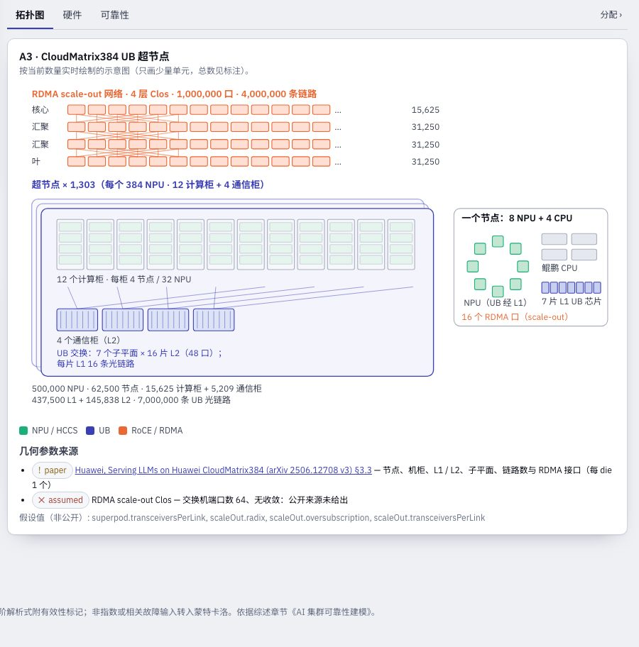
页签：拓扑图（按数量实时绘制的示意图）、硬件（硬件清单——单元、每 NPU 数量、10k / 100k / 200k / 500k 数量且当前 N 高亮、每单元中断 FIT、占作业硬件中断率的比例、一次故障的影响、置信——其后是可编辑 FIT 的各单元故障类型及每 NPU 贡献）与可靠性（§5）；页签栏右侧的「分配 ›」链接转到分配页（§7），策略只在那里运行。
4.6 方案编辑器（高级）
位于全部页面中，显示当前方案的全部字段：名称、结构模板、拓扑与超节点几何、度量、负载、备件、目标、成本、恢复编辑器（预设、流水线、分级、MTTR 混合）、带逐类详情的部件表与 JSON（可靠性框图自 v5.2 起在评审页的评审清单页签，§9.1）。用于非模板生成的方案以及首页未显示的字段。静默错误策略与恢复链已移到机制库页（§6.4）。
部件类：
| 字段 | 含义 |
|---|---|
| 计数规则 | 每 gpu / 节点 / 机柜 / 区 / 超节点范围内的单元数，或固定数量 |
| 故障率与单位 | 每小时、每百万小时、FIT、AFR、MTBF 小时等；集群 MTBF 锚点把「N 个单元、集群 MTBF 为 M」换算为单元故障率 |
| 修复路径 | 人工 MTTR，或双路径：自动覆盖率 c、成功率 s、自动 MTTR T_a、人工 MTTR T_m（E[R] = c T_a + (1 − c s) T_m） |
| 冗余 | 串联、并联、k-of-n、备用；倒换成功率、每次倒换的短暂停机、倒换失败后的恢复时间 |
| 共因 | β 因子及其波及的故障域（节点、机柜、超节点、子平面等） |
| 亚健康 | 进入率或稳态概率、持续时间、性能 φ、升级倍数、容忍 / 隔离策略、检测概率与时延 |
| 静默错误 | 每单元·小时的静默事件率（作业级策略见 §6.4） |
| 机制适用比例 | 本类中断中可由重执行、进程重调度与 DP 弹性处理的比例（参考目录逐事件标志按来源汇总） |
| 婴儿期、lemon、Weibull 形状 | 供蒙特卡洛作业仿真使用 |
负载与恢复：
训练：作业 NPU 数（或使用的超节点数）、时长、暴露的 checkpoint 保存时间 δ、间隔模型（Young、Daly 三项、Daly 精确、Saxena）或固定间隔、热备节点与补充时间、恢复路径（checkpoint τ/2 或副本一步）、实测每次故障丢失计算量 W。推理：所需副本数、每副本 NPU 数（可以一个超节点为单位）、备用副本、容量目标、SLO 窗口。
恢复：带规模律的流水线（预设 baseline-timeout-manual、automated-probe-standby、trainmover-8192-restart、elastic-replica）、带成功率的分级恢复（mindcluster-a3、generic-auto-restart 或自定义），或 MTTR 混合 R = T_det + T_auto + (1 − p_s) T_manual，其中 T_det = p_d t_auto + (1 − p_d) t_timeout。
度量、目标、成本、JSON：
亚健康阈值 φ_min（默认 0.7，低于则计为不可用）、用于网络平面损失的通信占比、首要度量（补偿后 / 原始）、goodput 与可用率目标、每 NPU 小时价格。页底的方案 JSON 编辑器显示完整文档（schema 见 docs/scenario.schema.json）。
5. 可靠性页签（原训练作业页）
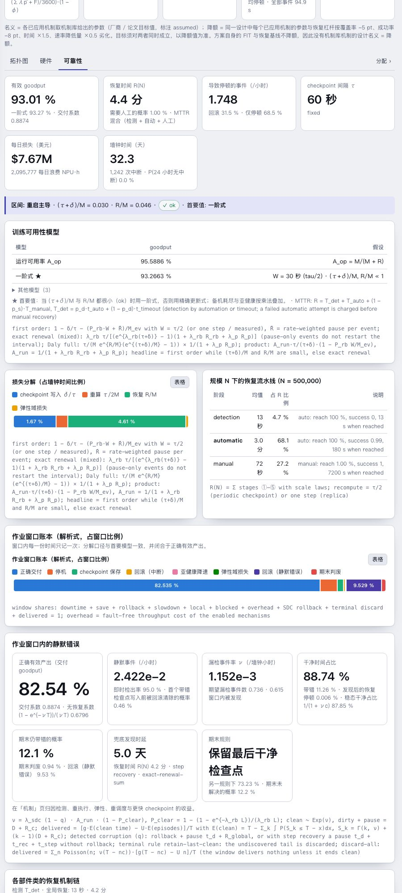
原训练作业页现在是首页的「可靠性」页签。首要指标（A_op、正确有效产出、MTBI、平均暂停、每日中断次数）位于页面的指标条，页签内不再重复；其余内容不变。
5.1 怎样读这一页
- 卡片：有效 goodput（性能）与交付系数、恢复时间 R(N)、每小时导致停顿的事件及回滚 / 仅暂停的比例、检查点间隔、每日损失金额与墙钟时间；正确有效产出本身在指标条中。
- 区间行：(τ + δ)/M 与 R/M 及有效性徽标；首要模型（标记正常时为一阶式，否则为精确更新式）。
- 模型表（v5.3 简化）：A_op 与首要 goodput 模型 ★ 及其假设；其余三个模型（乘积式、一阶式 / 精确更新式中非首要的一个（含推导 W）、Daly 完整模型）折叠在「其他模型」行中。
- 窗口账本：正确交付 + 停机 + 保存 + 回滚 + 降速 + 弹性域损失 + 备机 + 静默回滚 + 期末判废 = 1（解析式，按首要模型分解）。
- 各部件类的机制链（v5.3 简化为六列）：λ、该类中断在何处结束（占比非零的梯级合并为一格：预测迁移、网络切换、重执行、热替换、弹性、进程、全局）、回滚概率、平均停顿、每事件域损失；适用比例为部件名的悬停提示。
- 规模外推：1/N 定律，逐行应用机制链、仅停顿事件与静默错误窗口；一阶标记触发处带 caution / invalid 徽标；超节点几何下多一列超节点数；部件占比图显示占比最大的 15 类。
5.2 窗口账本
5.3 窗口内的静默错误
6. 机制库页
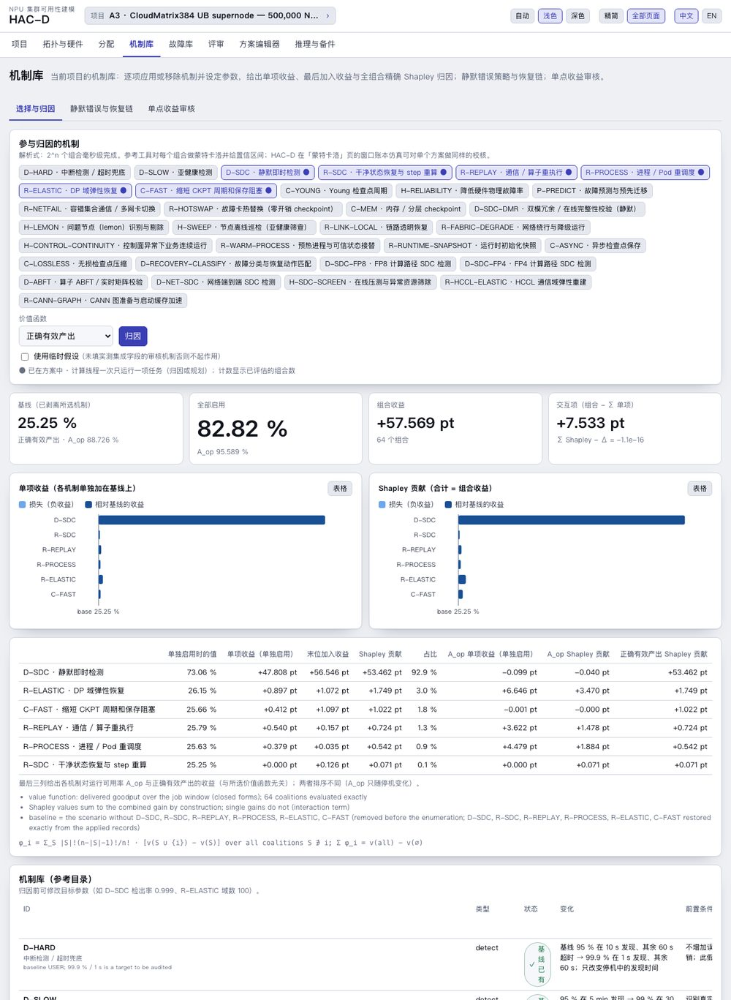
v4：三个页签——选择与归因（§6.1–6.2）、静默错误与恢复链（§6.4，这些设置的唯一归属处）与单点收益审核（§6.9）。按目标规划卡片已移到分配页（「机制规划」页签，§6.3），与把硬件 FIT 和恢复上限也纳入搜索的分配策略放在一起。拓扑方案默认应用 ReMAP 六项机制；在机制库表中修改已应用机制的参数会重新应用该机制。
6.1 机制库
参考目录的 12 项机制加上根据文献新增的 7 项（v3.2），各带其变化、前置条件、失败路径、参数置信、规划器使用的工作量分数（1–5），以及（对无故障时也消耗吞吐的方法）乘到 goodput 上的无故障开销。16 项有方案变换；3 项为说明性（已在基线中或不得重复计收益）。每次中断的机制链顺序：预测迁移 → 网络切换 → 重执行 → 热替换 → 弹性 → 进程重调度 → 全局 checkpoint 恢复 → 人工。
| ID | 机制 | 方案变化（参考策略的目标值） | 工作量 |
|---|---|---|---|
| D-HARD | 中断检测 / 超时兜底 | 混合检测 95 % 在 10 s → 99.9 % 在 1 s | 2 |
| D-SLOW | 亚健康检测 | 每个亚健康类 95 % 在 5 min → 99 % 在 30 s | 3 |
| D-SDC | 静默即时检测 | 检出率 0 → 95 %，1 s；回退到最近 checkpoint + 全局恢复 | 5 |
| R-SDC | 干净 step 状态恢复（依赖 D-SDC） | 已检出的静默最多重做 1 s、1 s 恢复 | 4 |
| R-REPLAY | 通信 / 算子重执行 | 90 % 在 5 s，不回滚；失败 10 s | 2 |
| R-PROCESS | 进程 / Pod 重调度 | 95 % 在 60 s，回滚；失败 120 s | 3 |
| R-ELASTIC | DP 域弹性 | 98 %；50 域中一个域不可用 180 s；同步 1 s；不回滚；失败 120 s | 5 |
| R-CKPT、R-MANUAL | 全局 checkpoint 恢复、人工恢复 | 基线（3 min、99 %，失败加 2 h 人工） | — |
| C-FAST | 更快的 checkpoint | τ 300 s / δ 4 s → 60 s / 1 s | 3 |
| H-PROTECT | 既有光路 / 供电保护 | 说明性：已在残余故障率中 | — |
| H-RELIABILITY | 降低硬件故障率 | 可选的故障率下降比例（不预设） | 4 |
| P-PREDICT | 故障预测与预先迁移 | 召回 50 % 的即将发生的持久性故障，变为计划内迁移（180 s、不回滚、无检测时延）；精度 80 %，误报增加停顿 | 3 |
| R-NETFAIL | 容错集合通信 / 多网卡切换 | 网络类故障在集合通信内吸收：95 % 在 2 s 内，不回滚 | 3 |
| R-HOTSWAP | 故障卡热替换 | 卡 / 服务器故障 180 s 内由备用设备替换，成功率 90 %，不回滚 | 4 |
| C-MEM | 内存 / 分层 checkpoint | δ 0.5 s、每 60 s 一次，全局恢复 −60 s（内存加载）；1 % 开销 | 3 |
| D-SDC-DMR | 双模冗余 / 在线完整性校验 | 静默检出率 99.9 %、1 s，吞吐开销 8 % | 4 |
| H-LEMON | 问题节点剔除 | 中断率 × (1 − 0.1 × 0.7) | 2 |
| H-SWEEP | 节点离线巡检 | 亚健康进入率 × 0.5、持续时间 × 0.5 | 2 |
6.2 归因
本页作用于在项目页选定的当前项目（v5.1；此前本页有自己的方案选择器；v4 之前默认为 54 条事件的参考目录——拓扑方案带同样的逐事件机制标志，组合同样可精确复现；按比例声明适用性的方案会显示提示）。选择参与的机制与价值函数（正确有效产出、有效 goodput 或 A_op），按归因：先把所选机制从方案中剥离（基线），再用解析式评估全部 2ⁿ 个组合，报告单项收益（单独启用）、末位加入收益（加在其余全部之上）与精确 Shapley 贡献（合计等于组合收益）。替代型机制（重执行、弹性、进程重调度）收益递减；互补型机制（检测 + step 恢复）只有一起启用才有收益。价值函数只评估每个组合的训练部分（跳过框图结构、重要度与割集），54 条事件目录上 10 项机制约一秒完成；按钮显示已评估的组合数，计算线程一次只运行一项任务（归因与规划排队），取消会重启计算线程。
6.4 静默错误与恢复链页签
作业级：即时检出率 q 与检测时间、兜底发现时延 D（参考基线为 120 h）、可选的 step 恢复（最多重做 t_step，用 t_rec 恢复），以及窗口的期末规则：保留最后干净检查点（经审核的参考引擎，默认）或期末未解决则整窗口清零（参考工具 V4 与 ReMAP 历史模型的 delivery 口径；两者是不同指标，可靠性页签同时给出两个值）。恢复机制链可启用重执行（不回滚）、DP 域弹性（不回滚；n 个域中一个域不可用 t_el，全局同步 t_sync）与进程重调度（回滚），各带成功率与成功 / 失败耗时；梯级顺序控件设定含检测时延的梯级的尝试顺序（↑ 提前一级；预测与网络切换始终在前），之后才是全局 checkpoint 恢复。v4 起本页签是这些设置的唯一归属处：打开某一梯级或检测即应用对应的机制库机制，修改任一参数即按新参数重新应用（应用记录与方案永不矛盾），关闭则精确移除；兜底时延、期末规则与梯级顺序不属于任何机制，直接修改。在方案编辑器中，每个部件类还提供由事件计数估计故障率：去重事件数 ÷（单元数 × 观测小时）给出故障率、FIT、MTBF 与精确 Garwood 区间（零事件时给单侧上界），一键写入该类作为实测故障率并记录推导。
6.9 单点收益审核页签（v3.7）
机制库新增 2026-10-14《新可靠性机制库·单点收益审核》的 16 项机制（链路透明恢复、网络绕行降级、故障隔离、控制面连续、预热进程、运行时快照、异步与压缩检查点、恢复动作分类、FP8 / FP4 / ABFT / 网络 SDC 检测、在线筛查、HCCL 弹性重建、CANN 图缓存），每项保留审核的原理、触发、流程、重叠规则与出处。审核留空的集成字段（适用比例、条件成功率、失败耗时、开销；FP8 / FP4 的风险占比）未填时这些机制只做单点审核；在机制库页（选择与审核页签）打开"使用临时假设"后进入集群级模型（标注 assumed，规划器降额）。同一恢复阶段的机制取最小值不相加。
单点收益审核：选择机制 → 生成审核 → 表格给出量化口径、基线 → 目标、单点改善量与集群级增量；"下载 HTML 报告"输出与审核交付件同结构的独立页面（卡片、口径、处理流程、阶段预算、总表、敏感性、逐项文章、内嵌 JSON）。跨规模的同一研究由 v5 命令行生成为报告集（hacd audit、hacd study 与 MCP audit_mechanisms、allocation_study 输出同样的报告。
7. 分配页
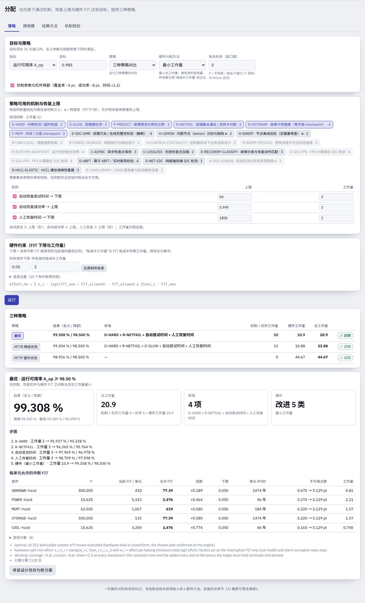
v5.3：两个页签。策略（§7.1）在约束下用机制、恢复上限与硬件 FIT 达到目标——在项目自身规模上，并在页签末尾的卡片中跨规模运行（§7.2；v5.2 之前是单独的「跨规模」页签，重复了整个表单）；经典方法（§7.3–7.11）保留 v3 的预算方法。原来的纯机制规划页签与 v3.7 分配研究面板已去掉：最优策略覆盖了规划器的搜索，跨规模研究由 v5 命令行生成（hacd findings，§15）。
7.1 「策略」页签
三种策略求解同一问题：在方案自身机制之上，使目标（作业窗口内的 A_op 或正确有效产出）在名义参数下且在所有机制参数与杠杆降额后（覆盖率 −5 pt、成功率 −8 pt、时间 ×1.5）都得到满足，可用三类手段：
- 机制：来自机制库的候选（工作量 = 库中工作量分数）；
- 恢复杠杆：把恢复参数推到上限——自动尝试 ≥ 60 s、自动成功率 ≤ 99.9 %、人工恢复 ≥ 30 min（上限与工作量 3 / 3 / 2 为可修改的假设）；
- 硬件：每个故障类的中断 FIT × xᵢ ∈ [下限ᵢ, 1]；工作量 eᵢ·log₂(1/xᵢ)，eᵢ 为该类 FIT 每减半的工作量（默认 2），下限ᵢ 为该类可达到的当前 FIT 最低比例（默认 0.05）。下限、工作量与固定类保存在方案中（
component.allocation）。
| 策略 | 规则 |
|---|---|
| 最优 | 在候选手段的各子集上求总工作量（机制 + 杠杆 + 硬件）最小：A_op 下最多 10 个手段、正确有效产出下最多 6 个时精确枚举（A_op 的硬件水平用闭式求出，所选方案再用引擎确认），超出时按总工作量贪心下降；最便宜的若干方案列为备选 |
| MTTR 降低优先 | 先恢复侧：每步加入单位工作量收益最大的机制或杠杆，直到目标满足或不再有收益；剩余缺口交给硬件 |
| MTTF 提升优先 | 先硬件，降到下限为止；只有下限仍不够时才加入机制（先物理类，再恢复侧，均在硬件处于下限时评估），之后再把硬件放宽回去 |
硬件分配方式。对由引擎二分求出的水平 L，xᵢ·cᵢ = clamp(wᵢ·L, 下限ᵢ·cᵢ, cᵢ)，其中 cᵢ = λᵢ·p̄ᵢ 是该类的暂停贡献（故障率 × 其机制链每次事件平均暂停）。最小工作量（默认）取 wᵢ = eᵢ，对 A_op 预算使 Σ eᵢ log₂(1/xᵢ) 最小；AGREE 取 wᵢ = 单元数 × 重要度，并把低于预算的类的余量再分配；ARINC 取 wᵢ = cᵢ（统一比例）。对 A_op，运行占比精确为 1/(1 + (Σ xᵢcᵢ + F)/3600)（F：隔离、误报与已检出静默错误的暂停），由此可闭式求出水平。目标已满足时结果给出硬件余量：所有中断 FIT 同比放大多少倍目标仍成立。
输出：三种策略并列（名义 / 降额结果、新增手段、工作量、是否达到；所选策略的说明首行给出名义与降额的定义，§3.1）；所选策略的步骤、各类允许的中断 FIT（当前、允许、倍数、下限、单元允许 MTBF、不可用点数前 → 后、工作量）、备选方案（最优）、可选的窗口账本校核（P(窗口 ≥ 目标) 及 Wilson 区间），以及将该设计另存为新项目。
报告设置（v5.3）。页面默认在机制库的候选机制上搜索，使用机制库的工作量分数（或在机制库表中修改过的分数）、最小工作量硬件分配且无逐窗口规则，所以其最优方案不是结果报告的方案——报告使用机制集的候选、工作量与杠杆、ARINC 分配与逐窗口规则：native950 记录 500,000 卡时，页面默认得到 D-HARD + R-NETFAIL + 两项杠杆（工作量 16.0），报告推荐 D-HARD + D-RECOVERY-CLASSIFY + R-LINK-LOCAL + H-CONTROL-CONTINUITY + 两项杠杆、k = 0.863（工作量 24.5）。「报告设置（hacd findings）」按钮把表单设为报告的输入（默认机制集的候选、工作量、参数与杠杆、ARINC、降额开、A_op 目标、400 个窗口），此时结果的最优行与报告一致；「页面默认」恢复机制库默认。下方的「报告预算（窗口规则）」卡在当前项目及其规模上运行与 hacd findings / hacd budget 相同的函数，打印报告的三行——今天、要求、推荐——含 A_op 名义与降额、MTBF_hw 与 MTTR_hw（降额）、P(窗口) 及判定、方案与硬件系数 k 及其约束侧（降额均值或逐窗口）；500,000 卡 400 个窗口需数分钟，可随时取消；少于 35 个窗口时窗口校核永远不能判定为「支持」（Wilson 下界达不到 90 %），卡片会给出说明。表上方的口径行就是报告的口径。该卡只对 A_op 运行。
| A3 · CloudMatrix384，500,000 NPU，A_op ≥ 98.5 % | 最优 | MTTR 降低优先 | MTTF 提升优先 |
|---|---|---|---|
| 结果（名义 / 降额） | 99.308 / 98.500 % | 99.304 / 98.500 % | 98.916 / 98.500 % |
| 新增机制与杠杆 | D-HARD、R-NETFAIL；自动尝试 60 s、人工 30 min | D-HARD、R-NETFAIL、D-SLOW；相同杠杆 | 无 |
| 硬件 | 五类：UNKNOWN ×0.19、POWER ×0.46（每柜 5,333 → 2,476 FIT）、MGMT ×0.58、STORAGE ×0.58、COOL ×0.77 | 相同五类（相差 0.01 以内） | 十五类，例如 UNKNOWN ×0.05（下限）、POWER ×0.11（每柜 5,333 → 599 FIT）、MGMT ×0.14 |
| 工作量 机制 + 杠杆 + 硬件 = 合计 | 5 + 5 + 10.90 = 20.90 | 8 + 5 + 10.88 = 23.88 | 0 + 0 + 44.67 = 44.67 |
解读：500,000 NPU 时默认设计为 95.59 %（降额 95.10 %）；1 s 检测、网络切换与两项恢复上限把降额值提到 97.60 %，再压低五个没有恢复梯级覆盖的类（未归因 ×0.19 … 冷却 ×0.77）即可补足。只靠硬件则需改进十五类，未归因中断降到下限 0.05。docs/ALLOCATION_STRATEGY_V4.zh.html 详细讲解这一算例，并在 16 个内置算例（四种模板 × 四个规模）上与 v3.0、v3.7 的方法对比。
7.2 跨规模（「策略」页签末尾的卡片）
「策略」页签的最后一张卡在多个规模下运行相同的目标、策略与约束（默认为内置的 10k / 100k / 200k / 500k；模板的硬件数量随 N 变化）：每个规模给出基线、名义 / 降额结果、新增手段、硬件工作量、总工作量以及最大的硬件任务或余量。带窗口规则的分规模预算由 hacd findings 生成（§15.1）；单个规模在「报告预算」卡中运行（§7.1）。
| 最优，A_op ≥ 98.5 % | 10,000 | 100,000 | 200,000 | 500,000 |
|---|---|---|---|---|
| A2 · RoCE | 余量 ×18.7 | 余量 ×1.82 | 硬件 1.11 | D-HARD + 杠杆 + 硬件 8.27；合计 15.27 |
| A3 · CloudMatrix384 | 余量 ×15.5 | 余量 ×1.50 | 自动尝试 60 s；合计 3.00 | D-HARD + R-NETFAIL + 杠杆 + 硬件 10.90；合计 20.90 |
| Atlas 950 | 余量 ×17.7 | 余量 ×1.73 | 硬件 1.78 | D-HARD + R-NETFAIL + 杠杆 + 硬件 6.03；合计 16.03 |
| Atlas 960E | 余量 ×18.9 | 余量 ×1.84 | 硬件 0.97 | D-HARD + 杠杆 + 硬件 7.43；合计 14.43 |
解读：默认六项机制使各拓扑在 100,000 NPU 以内达到 98.5 %（余量 ×1.50–1.84）；200,000 NPU 时一项杠杆或少量硬件即可补足，500,000 NPU 时各拓扑都需要机制、恢复上限与硬件三类手段。拓扑通过硬件构成起作用——UB 交换使每 NPU 多约 133 FIT（A3）、75 FIT（Atlas 950：每 64 卡柜 72 片 LRS、每 NPU 2 条光链路）与 34 FIT（Atlas 960E：刀片芯片少，假设），A3 的 32 卡机柜使其设施 FIT 加倍——因此相同目标下 A3 的工作量最大，Atlas 960E 最小（以其假设的交换芯片数为前提）。
7.3 「经典方法」页签
v3 的预算方法，保持不变：
经典方法页签把目标转换为需求：需要多高的静默错误检出率、允许损失如何按账本项拆分、每个部件类允许多大的中断率、每个恢复阶段允许多长时间，以及（设定可用率目标时）每类可贡献的不可用度。所有结果随编辑即时重算；页面上只有下表的输入控件。
7.4 输入
| 控件 | 含义 | 典型值 |
|---|---|---|
| goodput 目标 G* | 作业在窗口内须达到的正确交付（或有效）goodput | 10 万–20 万卡 0.90；ReMAP 目标表为 1 万 / 10 万 / 20 万 / 50 万卡 0.99 / 0.95 / 0.90 / 0.80 |
| 目标口径 | 正确有效产出（方案含静默错误时默认）或有效 goodput（仅性能） | 正确有效产出 |
| 可用率目标 A* | 按类分解的硬件级可用率（§7.5 第 6 项） | 0.999 |
| 方法 | 中断预算在各类之间的拆分方式（§7.6） | ARINC |
| 重启项占比 | 均衡分配中给恢复项的预算份额 | 0.5 |
| 拆分方式（损失预算卡片） | 按当前账本比例、在有损失的项上均分、或自定义权重（表中可编辑） | 按比例 |
| 类别权重表 | AGREE 重要度、可改进性权重、成本系数 a 与 b、固定类；保存在方案中 | 1 · 假设值 2 · 1, 1 · 无 |
7.5 经典方法页签自上而下算什么
- 静默错误与正确交付目标（正确交付口径）。正确交付目标 G_d 除以交付系数 f = 正确交付 ÷ 有效，再除以亚健康 / 备件 / 域损失系数 φ，得到有效目标与中断项目标。卡片先问仅靠硬件能否达到 G_d（所有故障率 → 0、静默策略不变）；若不能，则报告硬件不变时达到目标所需的最小即时检出率 q*、检出率不变时所需的最长兜底发现时延 D*，并以检出率提高到 q* 计算下方预算。若 q = 1 仍达不到，预算按 q = 1 计算，显示中断侧还须补足多少（说明中会写明）。
- 窗口账本损失预算。允许损失 (1 − G*) × 窗口（百分比与小时）按所选权重拆到九个账本项（停机、checkpoint 保存、回滚、亚健康降速、弹性域损失、备件耗尽、机制开销、静默回滚、期末判废）；每项给出当前、允许、超出与驱动该项的杠杆。拆分是记账目标，不证明各项能独立达到。
- 预算卡片（与方法无关，Young 间隔下的一阶式）：损失预算 1 − G_中断 与当前硬中断损失对比；保持 R、压缩 λ 给出所需 MTBI 与改进倍数；保持 λ、压缩 R 给出所需恢复时间；均衡分配按重启项占比分配预算。当前损失已在预算内时卡片显示余量（倍数小于 1）。
- 各部件类允许的故障率：所需作业中断率 λ* 按方法拆分；每类列出当前合计率、分配率、每单元允许率（每 10⁶ 单元·小时）、改进倍数（当前 ÷ 分配；小于 1 表示可以恶化）与可行性标记（ok，或比该类已知最优值更严）。
- 各恢复阶段允许的时间：所需恢复时间按各阶段（检测、自动尝试、人工份额，或流水线各阶段）当前时间超出下限的部分按比例拆分。
- 可用率目标分解（设定 A* 时）：各类 ln Aᵢ = (wᵢ/Σw) ln A*，并给出对应的允许故障率与 MTTR。
7.6 方法
| 方法 | 规则 | 适用情形 |
|---|---|---|
| 等分 | λᵢ* = λ*/m | 对子系统没有信息 |
| ARINC | λᵢ* ∝ 当前 λᵢ | 信任当前比例，所有类按同一倍数改进 |
| AGREE | Rᵢ = 1 − (1 − R*^{nᵢ/N}) / wᵢ，复杂度 × 重要度 × 工作时间 | 已知模块数与重要度权重 |
| 可改进性 | 按可改进程度加权（假设值权重更大） | 置信参差不齐 |
| 最小努力（Albert） | 只把最差的类拉到同一水平 | 少数类占主导 |
| 成本最优 | 在 Σ λᵢ = λ* 下最小化 Σ aᵢ (λᵢ⁰/λᵢ)^{bᵢ}（拉格朗日，下限为当前率的 5 %） | 各类有成本曲线 |
各方法只在各类之间的拆分上不同；预算卡片、损失预算与阶段预算与方法无关。当各类的单元数、重要度与可改进性权重都相同时，等分、AGREE 与可改进性加权结果一致（页面会提示）；预算已满足时最小努力与成本最优保持当前故障率。要让方法有差别，请编辑类别权重表：提高某类的重要度使其在 AGREE 中获得更多预算，给假设值更高的可改进性权重，为成本最优设置成本系数，把无法改进的类标为固定。
7.7 读表
- 某类的改进倍数 ×1.6 表示其中断率须降到今天的 1/1.6；×0.98 表示可以增加 2 %。
- "tighter-than-best-known" 表示分配的率低于参数库中该类已知的最优值：把预算挪给其他类（权重、固定），或改用机制。
- 损失预算的"超出"列指出先攻哪一项：10 万卡的事件目录上，仅静默回滚一项就超出允许值 21 点，所以检测（D-SDC）排在任何硬件改动之前。
- 有余量时（当前损失 ≤ 预算）：故障率表给出各类可恶化的程度，阶段表给出允许的时间；两者都可作为验收限值。
7.8 算例 A：54 条事件目录、100,000 卡、正确交付 90 %
| 量 | 值 |
|---|---|
| 当前正确有效产出（q = 0，D = 120 h） | 62.61 % |
| 仅靠硬件可达 | 64.30 % → 不可行 |
| 所需即时检出率 q*（硬件不变）/ 所需兜底时延 D*（q = 0） | 89.81 % / 11.3 h |
| q* 下的交付系数 → 有效目标 → 中断项目标 | 0.9504 → 94.69 % → 94.73 % |
| 账本损失预算：允许 vs 当前 | 10 % = 72 h 对 37.39 % = 269 h |
| 超出最多的项 | 静默回滚 +21.45 点（154 h）、期末判废 +2.07 点、停机 +1.84 点 |
| q* 下的预算卡片：允许 vs 当前硬中断损失 | 5.27 % 对 5.25 %（有余量） |
| 保持 R：MTBI ≥ / 保持 λ：R ≤ / 均衡 | 2.9 h（×0.99）/ 4.4 min / 3.2 h · 5.1 min |
| 故障率表（ARINC），每一类 | ×0.98（可恶化 2 %；CORE 中断 0.0467 → 0.0478 /h，即每 10⁶ 卡·小时 0.478） |
| 阶段表 | 13 s / 3.0 min / 72 s → 13 s / 3.0 min / 73 s（×0.99） |
解读：需求在检测而不在硬件。把静默错误即时检出率提高到约 90 %（或在 11 h 内发现污染）；中断侧已满足 90 %，故障率表与阶段表是验收限值。
7.9 算例 B：同一目录、正确交付 95 %（仅靠检测无法达到）
| 量 | 值 |
|---|---|
| q = 1 时可达 | 94.69 % → "即使 100 % 即时检出也无法达到"；预算按 q = 1 计算 |
| 预算卡片：允许 vs 当前硬中断损失 | 4.96 % 对 5.25 % |
| 保持 R：MTBI ≥ / 保持 λ：R ≤ | 3.2 h（×1.08）/ 3.9 min |
| 故障率表（ARINC），每一类 | ×1.06（CORE 中断 0.0467 → 0.0441 /h） |
| 阶段表 | 13 s / 2.7 min / 64 s（×1.13） |
解读：全量检测再加中断率降低 6 %（或恢复加快 13 %）即可达到 95 %。分配页的「策略」页签（固定硬件的最优策略）会说明机制库（重执行、弹性、进程重调度、更快或内存 checkpoint、热替换）能否替代硬件提供这部分：ReMAP 的六机制组合在 10 万卡达到 94.72 %，HAC-D 的十机制组合 94.64 %，所以 95 % 还需要硬件或 checkpoint 设计上的改动。
7.10 算例 C：三类故障基线、50,000 卡、正确交付 90 %
基于参考夹具 ref-three-classes-100k（自 v4.1 起不在应用列表中）：用 hacd example ref-three-classes-100k 导出为 JSON，导入 JSON 读入后把卡数设为 50,000。
| 量 | 值 |
|---|---|
| 当前正确有效产出 / 仅靠硬件可达 | 76.67 % / 77.88 % → 不可行 |
| 所需即时检出率 q* / 所需兜底时延 D* | 71.54 % / 32.0 h |
| q* 下：预算 vs 当前硬中断损失；MTBI ≥；R ≤；故障率 | 3.29 % 对 3.19 %；5.6 h（×0.96）；4.8 min；×0.94 |
| 采用参考的 95 % 检出率后（机制库页 → D-SDC → 应用到方案） | 正确交付 95.43 % |
| 此时：预算 vs 当前；MTBI ≥；R ≤；故障率；阶段 | 8.81 % 对 3.19 %；89 min（×0.25）；24 min；×0.25；×0.18 |
解读：有了 95 % 检出率，5 万卡的中断侧有四倍余量；表格给出硬件与恢复可以恶化而 90 % 仍成立的限度。
7.11 从预算到需求
- 把各类允许的故障率（每单元 FIT）作为验收标准交给硬件负责方，阶段时间交给平台团队，q* / D* 交给静默错误检测团队，损失预算各项交给对应杠杆的负责人。
- 用「策略」页签检查机制路线（带降额；不可行时给出找到的最佳设计），并用窗口账本仿真校核（评审页的仿真校核页签，或策略的账本校核：P(窗口 ≥ 目标) 及其 Wilson 判定）。
- 每次实测后重跑；页面即时重算。
hacd allocate <s> --goodput 0.9 --basis delivered --method arinc与 MCP 工具allocate_scenario（含lossMethod、lossWeights）为脚本与智能体输出同样的表；完整流程见docs/ALLOCATION_PRACTICE.md。
窗口账本损失预算（正确交付口径）：允许损失 (1 − G*) × 窗口按九个账本项拆分——按当前账本比例、在有损失的项上均分、或自定义权重（ReMAP 的停机 / 保存 / 回滚 / 判废 / 降速 / 域损失 25 / 20 / 35 / 10 / 5 / 5 % 是一种选择）——逐项给出当前、允许、超出以及驱动该项的杠杆。拆分是记账目标，不证明各项能独立达到。
8. 故障库页
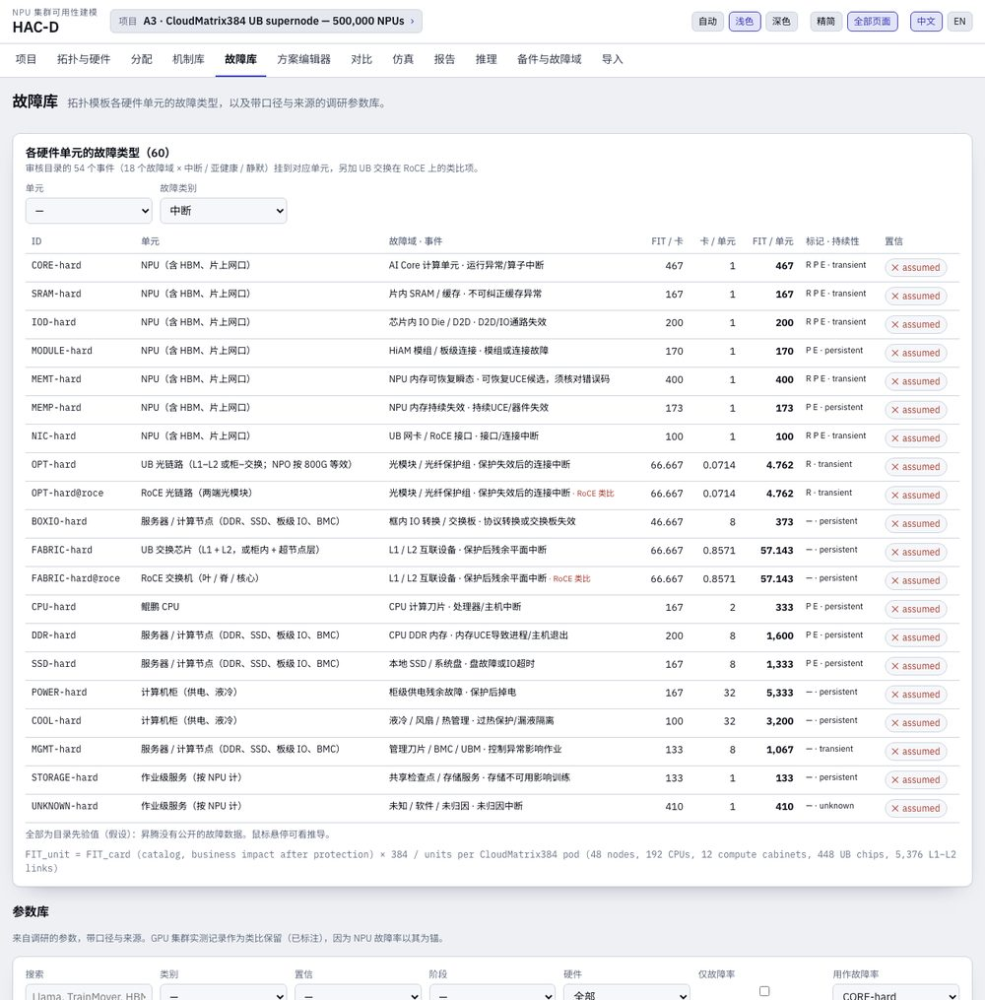
635 条来自综述、带口径、出处与置信的记录（故障率、MTTR 各阶段时间、SDC 率、备件比例、checkpoint 开销、昇腾来源）。按类别、种类、置信、阶段与硬件筛选后，用作故障率可写入当前方案的部件。357 条在 GPU 集群上实测的记录作为类比保留并标注 GPU 类比（NPU 故障率以其为锚；昇腾没有公开故障数据）；硬件筛选可只看 NPU / 通用记录，或只看类比记录。
自 v5.2 起，60 个单元故障类型（挂到各硬件单元上的 54 个目录事件加 6 个 RoCE 类比项，含目录每卡 FIT、每单元对应卡数、每单元 FIT、机制标记与持续性）只在拓扑页的硬件页签（§4.3）显示一次，并在那里按方案修改与覆盖；本页顶部的按钮直接打开它。
9. 评审页
「设计对不对、交付什么」集中在一处：11 条评审清单与导出、蒙特卡洛校核、当前项目的敏感性，分三个页签；页签是项目设置。
9.1 评审清单页签
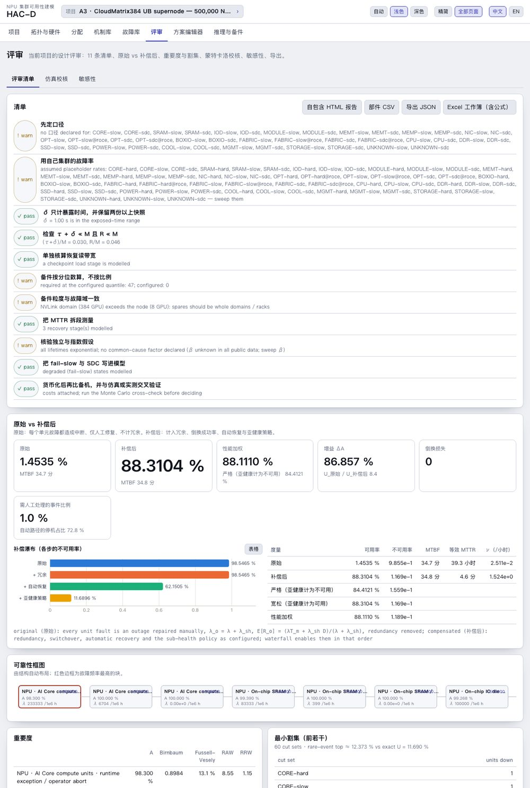
HTML 导出的关键指标采用指标条的口径（v5.3）：A_op 名义 / 降额、MTBF_hw、MTTR_hw 名义 / 降额与每 NPU 中断 FIT 与拓扑页数值相同，首要 goodput 模型加星号，每行标出公式；其后是 RBD 度量（可用率、容量可用率、MTBF、等效 MTTR、年故障次数）、部件表、清单、假设与方案 JSON。
| # | 清单项（综述设计评审） |
|---|---|
| 1 | 先定口径 |
| 2 | 用自己集群的故障率 |
| 3 | δ 只计暴露时间，并保留两份以上快照 |
| 4 | 检查 τ + δ ≪ M 且 R ≪ M |
| 5 | 单独核算恢复读带宽 |
| 6 | 备件按分位数算，不按比例 |
| 7 | 备件粒度与故障域一致 |
| 8 | 把 MTTR 拆段测量 |
| 9 | 核验独立与指数假设 |
| 10 | 把 fail-slow 与 SDC 写进模型 |
| 11 | 货币化后再比备机，并与仿真或实测交叉验证 |
重要度（Birnbaum、Fussell-Vesely、RAW、RRW）对各块排序；Excel 导出生成带公式的工作簿（Inputs、Structure、Results、Formulas），可脱离 HAC-D 独立重算。
9.2 仿真校核页签
窗口账本（默认）：对一个作业窗口做离散事件仿真，含三类故障、机制链（按适用比例做伯努利抽样）、亚健康检测与隔离、静默错误（即时检测、step 恢复、兜底发现、干净 checkpoint 保留、期末判废）与 checkpoint 批处理；与经审核的参考引擎同一口径，每小时只记一次。作业仿真：单元级蒙特卡洛，含 Weibull / 对数正态寿命与修复、婴儿期、lemon 单元、带波及范围的 β 共因、有限热备池、冗余组与 fail-slow。两者都与解析式对比并在不一致时提示；不一致时以仿真为准。均值带 Student-t 95 % 半宽与 type-7 分位数；P(正确交付 ≥ 目标) 与期末未解决概率带 Wilson 95 % 区间，区间只覆盖抽样误差。
9.3 敏感性页签
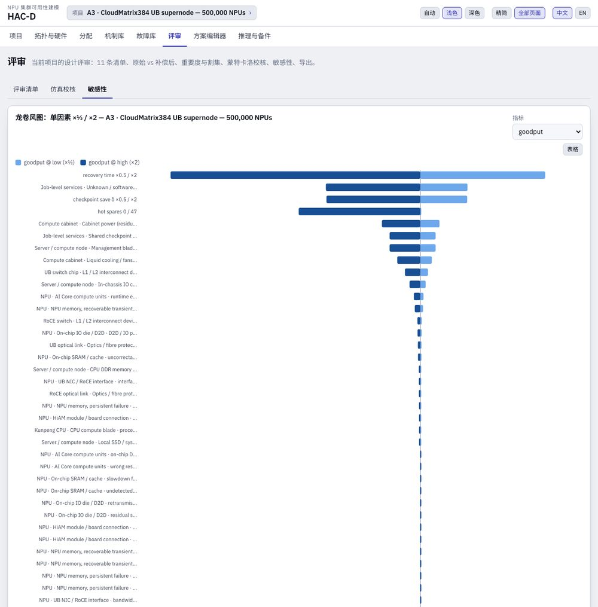
龙卷风图把每个部件故障率、恢复时间、checkpoint δ、热备数与共因 β 各减半与加倍，对 goodput、正确交付、可用率、每日损失或 MTBI 作敏感性分析。参数敏感性用它；离散机制的价值用机制库页。
10. 导入表格与对比项目
两者都是项目页（§3.4）的页签，与列表、新建页签并列。
10.1 导入页签
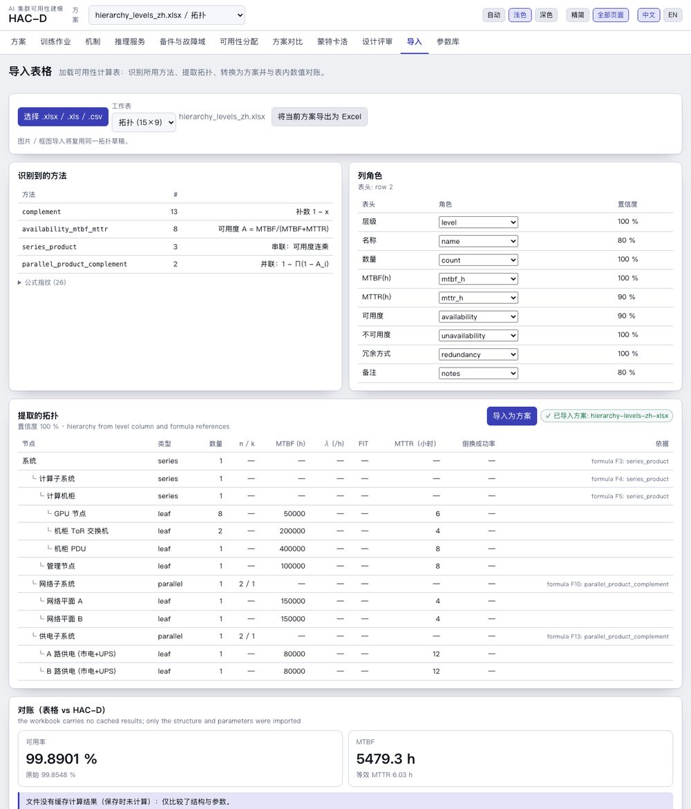
公式被识别为 18 种方法标签：由 MTBF / MTTR 或 λ / MTTR 求可用率、不可用度 λ·MTTR、FIT → λ、AFR → MTBF、串联乘积、稀有事件求和、并联补集、k-of-n 显式求和 / COMBIN / BINOM.DIST、备用、倒换加权、MTTR 自动 / 人工混合、Markov MMULT / MINVERSE、百分比与补集换算、计数幂次。拓扑从层级列、缩进、分组级别与公式依赖图提取为草稿，转换为方案并与表内数值对账。九个合成样例工作簿为测试集；真实工作簿用于调校表头词典。
10.2 对比页签
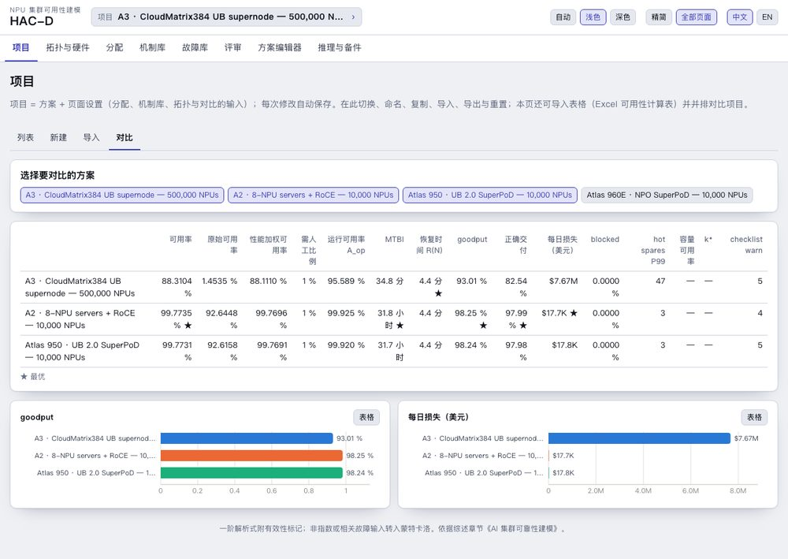
选择要对比的项目（默认前三个）；集合是当前项目的设置。参数敏感性用评审页的敏感性页签（§9.3），离散机制的价值用机制库页。
11. 推理与备件页
位于全部页面中：原来的两个页面合为一页的两节，都读取当前方案。
推理服务：N+k 副本池，一个副本 = 一个节点、机柜或超节点；副本故障率 λ_r = 副本范围内及以下各类之和，MTTR_r 按率加权，u_r = λ_r MTTR_r / (1 + λ_r MTTR_r)，有服务可用率 1 − u_r^{n+k}，容量可用率 Σ_{j≤k} C(n+k, j) u_r^j (1 − u_r)^{n+k−j}，达到目标所需的 k、每日副本故障数与空闲备用 NPU 小时。超节点预设下本页以超节点数给出 10 万 / 20 万 / 50 万 NPU 集群的规模（CloudMatrix384 类比故障率：261 / 521 / 1,303 个超节点，99.9 % 容量可用率需 k* = 9 / 14 / 27 个备用）。
备件与故障域：按二项分位数的热备（ByteRobust）、按泊松与补充时间的热备（Meta）、维修流水线中的单元与作业期内的更换数、节点 MTBF × MTTR 的所需备件图，以及与故障域一致的备件粒度。
12. 方法参考
完整推导见 docs/MODEL_REFERENCE.md（§1–§23）与 docs/TRAINING_AVAILABILITY_FORMULAS_AND_COMPARISON.md；与参考引擎及 ReMAP 的对比见 docs/TOOL_COMPARISON.md。除注明外时间单位为秒。
12.1 结构
12.2 修复路径与倒换
三种恢复模型遵循同一约定：尝试过的路径都计入其耗时，失败后转入下一路径（单元修复 E[R] = c·T_a + (1 − c·s)·T_m、作业混合 R = T_det + T_auto + (1 − p_s)·T_manual、分级 Σ P_i·t_i）；旧式单一 mttrHours 视为人工路径。
12.3 亚健康
12.4 原始与补偿后
12.5 checkpoint 与 goodput
12.6 机制链
12.7 静默错误（有限窗口）
12.8 归因与规划
12.9 分配与备件
12.10 v3.5 新增：期末规则、统计、上界、损失预算、事件计数
12.11 v4 新增：拓扑数量、单元故障类型、分配策略
13. 验证与精度
13.1 黄金向量与测试
530 个黄金向量由 Python 按模型规范独立计算（mpmath 求积、CTMC 精确解、网格上的更新方程、SciPy 分布），计算时不读引擎代码：v1 143 个、v2 26 个、v3 28 个（含梯级顺序的机制链、混合更新式、两种期末规则下的静默错误）、v3.5 统计 92 个（Student-t 与卡方分位数、不完全伽马 / 贝塔函数、Wilson 与 Garwood 区间）、v4 拓扑模板 207 个（v5.4 新增通用 UB 超节点用例）、v5 预算原语 29 个（G1–G6）、v6 口径归一 5 个（G7：单位换算与各类求和到 1e-9）。测试集含 840 个核心测试、52 个导入器测试、36 个抽取工作器测试（含操作员宿主）、28 个报告测试与 7 个命令行测试（hacd ingest run 的 ok 与 needs-input 两条路径、协议打印，以及 hacd ingest operate 对模型替身的三个场景）；node packages/reports/test/reproduce.mjs 逐字节复现六份昇腾报告。三个测试在规模上运行引擎（笔记本上 8–26 s）；核心与导入器包的 vitest 超时设为 300 s，命令行包 600 s，慢机器只在挂起时才失败。
13.2 与参考引擎的交叉校核
经审核的参考引擎（单训练作业、30 天离散事件仿真、每方案 4000 次）与 HAC-D 在同一基线上：万卡硬件 MTBF 30 h 并线性外推，τ 300 s，δ 4 s，检测 95 % 在 10 s 否则 60 s，恢复 180 s 成功率 99 % 否则加 2 h 人工。
| 卡数 | 参考 A_op | HAC-D A_op | 参考有效产出（仅中断） | HAC-D 精确更新 | 参考正确交付（三类） | HAC-D 正确交付 |
|---|---|---|---|---|---|---|
| 10,000 | 99.75 % | 99.75 % | 98.3 % | 98.3 % | 93.33 ± 0.26 % | 93.33 % |
| 100,000 | 97.56 % | 97.55 % | 94.99 % | 94.98 % | 62.56 ± 0.46 % | 62.61 % |
| 200,000 | 95.24 % | 95.22 % | 91.43 % | 91.45 % | 45.87 ± 0.40 % | 45.66 % |
| 500,000 | 88.88 % | 88.88 % | 81.84 % | 81.88 % | 25.24 ± 0.26 % | 25.32 % |
单项机制收益与六机制 Shapley 贡献在参考工具的抽样误差内一致；弹性一项差异最大（10 万卡 0.83 对 0.25 点），因为参考工具的弹性路径使其故障流失去同步（其配对差值误差 ±0.3–0.6 点）。一阶 goodput 在 10 万 / 20 万 / 50 万卡分别低 0.2 / 0.4 / 2.4 点，这正是标记触发时首要值切换为精确更新式的原因。
13.3 第一版闭式结果与 ReMAP 桥接
参考引擎第一版的闭式模型（TOR = A·τ/L·z/(e^z − 1)·S）就是 HAC-D 的精确更新式：scripts/ref-compare-v1.ts 以 1e-16 的精度复现其在 1 万–50 万卡的 goodput 与可用率。ReMAP 逐字节内嵌经审核的审核引擎；scripts/remap-bridge.ts 可在任意 HAC-D 方案上运行它，在 54 条事件目录上用 ReMAP 的种子（4000 个窗口）得到与已发布基线完全一致的 62.56 % ± 0.46、A_op 97.556 %，HAC-D 解析式为 62.61 %、97.548 %。scripts/remap-param-check.ts 证实该目录示例与 ReMAP 参考审核的事件 FIT、标志、基线设置与机制参数完全相同。
14. 推荐工作流
docs/WORKFLOW.md 与 docs/ALLOCATION_PRACTICE.md。- 拓扑与规模：选择与设计相符的模板（A2、A3、Atlas 950、Atlas 960E），设定作业 NPU 数与硬件参数；检查假设字段。
- 硬件与故障类型：阅读 10k–500k 的硬件清单；有实测值时替换库中 FIT（按单元；区间可用方案编辑器中的事件计数估计）。
- 机制：保留或调整默认六项，设定参数与恢复链顺序，检查静默错误策略；用归因（Shapley）看各机制的贡献。
- 评估：指标条与「可靠性」页签——A_op、正确有效产出、MTBI、区间标记、窗口账本。
- 分配：设定目标与约束（FIT 下限、每减半工作量、候选机制、恢复上限），对比三种策略，再跨规模运行；把各单元允许 FIT 交给硬件负责方，把机制组合与恢复上限交给平台团队。
- 校核与报告：账本校核（P(窗口 ≥ 目标) 及 Wilson 判定）、非指数或相关输入时用评审页的仿真校核页签、评审清单页签及其导出；然后在生产中实测并循环。
内部输入（v6）：硬件 FIT 表、新拓扑与新机制通过工作表与 hacd ingest——暂存、校验、试算、差异、提升——在持有文档的内网中用离线包完成（§15.5；操作手册 docs/markdown/INGEST_RUNBOOK.md）。
15. 命令行、MCP 与文件
15.1 命令行
| 命令 | 作用 |
|---|---|
hacd examples、hacd example <id> | 列出 / 打印内置方案（v3.7 的 GPU 示例仍可按 ID 打印） |
hacd topology <a2-roce|a3-ub384|a950-ub2|a960e-ub|ub-generic> --npus 10000 [--sizes 10000,100000,200000,500000] [--no-scale-out] [--fill proportional|full-pod] [--radix 64] [--variant a950-8k] [--count ubPodSwitch=200,…] [--out s.json] | v4 硬件清单、各规模下按单元的每 NPU 中断 FIT、方案文件；--variant 选 Atlas 950 超节点形态，--count 按行设定用户数量（v4.3） |
hacd strategy <s> | --template a3-ub384 --npus 50000 [--strategy optimal|mttr-first|mttf-first] --target 0.998 [--metric aOp|delivered] [--split min-effort|agree|arinc] [--sizes …] [--trials 200] | v4 分配策略（不指定策略时运行三种），--sizes 跨规模运行 |
hacd eval <scenario.json> | 评估：可用率、MTBF、goodput、备件、推理、清单 |
hacd compare a.json b.json … | 并排 KPI |
hacd allocate <s> --goodput 0.9 --basis delivered --method arinc | 各类与各阶段预算；静默错误杠杆 |
hacd tornado <s> --metric delivered | 单因素敏感性 |
hacd simulate <s> --reps 100 | 单元级蒙特卡洛与解析式对比 |
hacd ledger <s> --trials 300 --target 0.9 | 窗口账本仿真与解析式对比 |
hacd rate <events> <unitHours> [--confidence 0.95] | 由事件计数估计故障率，精确 Garwood 区间（零事件给上界） |
hacd import-remap <inputs.json> --cards 100000 --out s.json | 把 ReMAP / 参考工具的事件库转为事件粒度的 HAC-D 方案 |
node --import tsx scripts/remap-bridge.ts <s> --trials 400 --export req.json | 在方案上运行 ReMAP 内嵌的审核引擎与 V4 引擎，与 HAC-D 对比，导出引擎输入与 ReMAP 审核请求 |
hacd mechanisms <s> --players D-SDC,R-REPLAY | 单项 / 末位加入 / Shapley 收益 |
hacd plan <s> --target 0.9 --trials 200 | 最低工作量可行组合、必要机制、扫描、校核 |
hacd audit <s> --provisional --html audit.html | 所选机制的单点收益审核与独立 HTML 报告（v3.7） |
hacd study <s> --sizes 10000,100000,200000,500000 --target 0.985 --html study.html | 跨规模分配研究与独立 HTML 报告（v3.7） |
hacd measures <s> | 原始 vs 补偿后与瀑布 |
hacd methods book.xlsx、hacd import-excel book.xlsx --out s.json、hacd export-excel s.json | Excel 方法报告、导入、导出 |
hacd schema | 方案文件的 JSON Schema |
v5 报告流水线（记录按内置 id、JSON 路径或 packages/core/data/records/<id>.json 解析；细节见 docs/markdown/USER_GUIDE.md 的 “v5 CLI” 一节） | |
hacd records、hacd schema --record|--mechanisms|--rates | 列出拓扑记录、机制集与失效率覆盖文件；输出三种输入记录的 JSON Schema |
hacd study --record a960e --scales 10000,100000 --permutations 300 --out-dir docs/data | 机制集在该记录裸场景上的 Shapley 研究（结果报告表 6、机制分层） |
hacd findings --record native950,ubl128 [--rates f.json] [--mechanisms m.json] [--scales …] [--target 0.985] [--trials 400] [--study-dir dir] [--out docs] [--data-out docs/data] | 分层 MTBF / MTTR 预算、Shapley 研究与机制分层 → 旁路 JSON 与双语结果报告（另加方法报告）；页脚回显命令、记录与机制集 id、运行选项与引擎版本。hacd findings --data docs/backup/ascend-allocation [--record ids] [--out docs] 在配方改动后由已存旁路 JSON 重新渲染页面，沿用其中的出处（不运行引擎；即 node packages/reports/test/reproduce.mjs 所比较的内容） |
hacd methodology --data docs/data、hacd bom --records … --npus 100000 | 由一次 findings 运行的旁路 JSON 生成方法报告；各 scale-out 变体的元件清单 |
hacd budget --record cm384 --scale 200000、hacd prune --study-dir dir --out pruned.json | 单个架构 × 规模的预算（今天 / 要求 / 推荐）；按剪除规则重新判定机制集的分类列表 |
v6 输入流水线（工作表 → 暂存记录 → 校验门 → KPI 差异 → 提升；细节见 docs/markdown/USER_GUIDE.md 的 “v6 ingest” 一节与 §15.5） | |
hacd ingest template <kind>、hacd ingest fields <kind> | --vocab | 某类工作表的示例（topology、fault-rates、device-fit、koujing-mapping、mechanisms、mechanism-proposal），原样即可解析；字段路径与封闭词表 |
hacd ingest worksheet ws.md… --out staging、hacd ingest import-fit book.xlsx --id x、hacd ingest normalize --devices d --mapping m --id x | 工作表 → 暂存 JSON（引擎没有的模板、单元或机制变为扩展请求）；器件失效率电子表格 → 器件表；器件表 × 口径映射 → 带算式的失效率覆盖 |
hacd ingest validate staging、hacd ingest dry-run --record r [--rates f] [--mechanisms m] [--scales …] | 模式之外的校验门（有错误时退出码 1）；各规模下预算的 KPI 行 |
hacd ingest diff --before-record native950 --after-record r [--after-rates f] --out staging/delta | 带出处的输入变化、前后 KPI 行与 Δ → delta.{json,md,zh.md,html}，双语评审页 |
hacd ingest promote staging [--data dir] [--force] | 通过校验的记录以自己的 id 进入数据目录（公开 id 被拒绝），每个文件一行 CHANGELOG.md |
hacd ingest extract doc.txt --kind topology --provider openai-compatible --base-url … --model … [--mode guided_json] --source-type vendor | 模型步骤：证据卡、评审队列、运行日志、草稿工作表（§15.5） |
hacd ingest run --worksheets ws --staging staging [--before-record id] [--scales …] [--trials n] [--out dir] [--promote] [--json] | v6.1 一次调用完成整条链：工作表 → validate → dry-run → diff →（promote）→ findings，每步一个子进程；写出 run.json（状态 ok / needs-input / failed、每步 issue 的 path 与 code、KPI 行、路径）与 SUMMARY.md；退出码 0 / 2 / 3；从不使用 --force |
hacd ingest protocol [--lang zh|en] [--tools] [--fix-table] | 给内网模型的操作员协议：系统提示词、函数调用工具清单、门禁 code → 修复表（docs/markdown/AGENT_OPERATOR.md） |
hacd ingest operate --base-url u --model m [--api-key-env N] --work dir --docs f… [--brief f] [--before-record r] [--scales] [--trials] [--permutations] [--lang zh|en] | v6.1 参考宿主：OpenAI 兼容的内网模型通过工具清单驱动流水线；只读工作目录与文档，只写 ws/；最终消息到 stdout，operator-log.jsonl 与 operator-result.json；退出码 = 最后一次 run 的。node scripts/mock-onprem-model.mjs 是按剧本回答的模型替身 |
所有命令都接受 --json。
15.2 MCP 工具
list_examples、get_example、scenario_schema、evaluate_scenario、compare_scenarios、allocate_scenario、tornado_scenario、simulate_scenario、library_search、excel_method_report、import_excel_scenario、export_excel、mechanism_library、mechanism_report、apply_mechanisms、simulate_ledger、plan_mechanisms、audit_mechanisms、allocation_study、estimate_rate，v4 新增 topology_bom 与 allocation_strategy。
15.3 内置示例
自 v4.1 起，内置示例就是各拓扑模板（v4.2 起为四种，v5.4 起加上由记录定义的通用 UB 超节点为五种）；v5.3 加入报告集中没有独立模板的两个架构，并由记录构建 Atlas 950 示例（records/topologyRecord.ts 的 RECORD_EXAMPLES），使昇腾报告集的每个架构都能以报告的数字在页面上打开。规模是参数（页面的规模按钮 10k / 100k / 200k / 500k 或任意 N、hacd example <id> --npus N、MCP 工具 get_example 的 npus），不再为各规模或各设计另设示例。
| ID | 方案（10,000 NPU，各单元故障类型，默认六项机制） |
|---|---|
topology-a3-ub384 | A3 · CloudMatrix384 UB 超节点（论文几何） |
topology-a2-roce | A2 · Atlas 800T A2 服务器（8 NPU）+ RoCE Clos |
topology-a950-ub2 | Atlas 950 · UB 2.0 SuperPoD（产品页现行规格的 1,024 卡形态，柜内全互联 + 光交换 Clos；可选 8,192 / UB-Mesh 4D / 两级拷贝）；v5.3：采用 native950 记录的几何（跨超节点网络每 NPU 4 端口、4 平面、radix 1024，assumed） |
topology-ubl128 | SuperPoD Flex / UBL128（128 NPU，单层 UB 交换）——ubl128 记录（v5.3） |
topology-a3server | Atlas 800T A3 服务器集群（每台 8 NPU，跨机 RoCE）——a3server 记录（v5.3） |
topology-ub-generic | 通用 UB 超节点（由记录定义）——v5.4 的占位 1,024 NPU 两级超节点；用记录或工作表替换其几何（首个记录 a960：HC2025 路线图的 Atlas 960 超节点） |
topology-a960e-ub | Atlas 960E · NPO 超节点（56 + 14 柜、每柜 72 NPU，LinkBlade + LinkDevice，四平面 scale-out） |
不列出的参考夹具：ref-catalog-100k（按卡计的 54 事件目录，100,000 卡，逐事件重执行 / 进程 / 弹性标志）与 ref-three-classes-100k（参考工具已确认的三类故障基线）仍可按 ID 取得，用于与参考工具及 ReMAP 的交叉核对（hacd example、get_example、scripts/remap-bridge.ts）。v2 的昇腾示例 ascend-cm384、ascend-atlas950、ascend-supercluster-100k 已移除——A3 与 Atlas 950 模板加规模即可覆盖（推理池可在方案编辑器中把模板的负载改为推理）；浏览器中这些示例未修改的副本会自动移出列表。v3.7 的 GPU 示例（ref-baseline-100k、survey-ex1、survey-ex3、survey-ex4、nvl72-16k）同样不列出；hacd example <id> 与 get_example 仍可返回它们，GPU 工具可从 git 标签 v3.7-gpu 分出。
15.4 方案 JSON
{ "version": "0.2", "meta": { "name": "…", "basis": [], "description": "…" },
"topology": { "template": "a3-ub384", "gpusPerNode": 8, "nodesPerRack": 4, "superpod": { … }, "fabricFill": "proportional", "scaleOut": { "portsPerNpu": 2, "radix": 64, "oversubscription": 1, "transceiversPerLink": 2 } },
"components": [ { "id": "gpu", "subsystem": "compute", "countRule": { "per": "gpu" },
"failure": { "value": 3.3e-6, "unit": "per_h", "koujing": { "event": "hard_interruption", "denominator": "card_h", "level": "job" }, "provenance": { … } },
"repair": { "auto": { "coverage": 1, "successProbability": 0.99, "mttrHours": 0.053 }, "manual": { "mttrHours": 2 } },
"subhealth": { … }, "sdc": { "ratePerHour": … }, "mechanisms": { "replay": 0.83, "process": 1, "elastic": 1 } } ],
"structure": { "mode": "template", "template": "training-series" },
"workload": { "type": "training", "nGpus": 100000, "durationDays": 30, "deltaS": 4, "intervalS": 300 },
"recovery": { "mode": "mixture", "detection": { "coverage": 0.95, "autoSeconds": 10, "timeoutSeconds": 60 }, "automatic": { "successProbability": 0.99, "seconds": 180 }, "manual": { "seconds": 7200 } },
"sdc": { "detection": { "coverage": 0, "detectSeconds": 1 }, "fallbackDelayHours": 120, "terminalRule": "retain-last-clean" },
"mechanisms": { "order": ["replay", "hotswap", "elastic", "process"], "replay": { … }, "elastic": { … }, "process": { … }, "overheads": { } },
"measures": { "subhealthThreshold": 0.7, "primary": "compensated", "commShare": 0.3 }, "targets": { "goodput": 0.9, "operational": 0.985 } }
v4 字段：topology.template、cpusPerNode、fabricFill、scaleOut；计数规则 cpu、ub_switch、roce_port、roce_switch、roce_link；RoCE 类比的单元故障类型写作 <事件>@roce；component.allocation.effortPerHalving；targets.operational（A_op 目标）。内部名称保留 nGpus、gpusPerNode 与计数规则 gpu 以保持兼容。
完整 JSON Schema 由 hacd schema 输出（v5 输入记录加 --record | --mechanisms | --rates）；工具规范见 docs/markdown/SPEC.md。
15.5 v6 工作表、口径映射与离线包
内部输入以工作表进入：带 YAML 头、## 小节标题与固定表头竖线表格的 Markdown 文件（规范 hacd-worksheet-1）。一张工作表就是一条记录；解析器是严格的，出错时报出行号；值单元格留空表示“未声明”。hacd ingest template <kind> 打印一份原样可解析的示例。v5 流水线的 JSON 记录仍是契约；工作表是评审界面，每条公开记录经工作表往返后不变。
硬件 FIT 不直接手填到失效率工作表。器件表按来源原文记录各部件的失效率（FIT、每 10⁶ 小时、每小时、MTBF 小时或 AFR，附来源与来源类型）；经评审的口径映射按器件与故障类给出故障单元、每单元器件数与影响因子——该部件的失效在现有保护之后成为该类业务影响事件的比例。hacd ingest normalize 计算 FIT类,单元 = Σ FIT器件 × 每单元器件数 × 影响因子，把每一项写入条目的算式，并按政策给出置信（任一因子或来源为假设即 assumed，否则 derived，否则取来源类型自身的置信）。hard / slow / sdc 三类各自求和，从不跨类相加。
校验门（hacd ingest validate）：封闭词表——故障类 id、故障单元、模板、计数行、机制 id 与机制实际读取的参数键；出处完整性；合理性，即在单元库值的 ×0.1 … ×10 之内（是要读的警告，不是错误）；拓扑记录的结构一致性（节点、机柜、SuperPoD 的 NPU 数与几何一致）；以及 id 政策：内部记录用自己的 id，与公开的 native950、ubl128、cm384、a3server、a960e、remap-latest-2026-10、remap-per-card-2026-10-09 并列，后者从不被覆盖。引擎无法表达的设计或机制（新的硬件单元类型、新模板、新变换）不是数据更新：worksheet 转而写出面向 HAC-D 侧的扩展请求，只含结构。
差异（hacd ingest diff）：评审页列出每个变化的输入及新记录声明的来源与置信、按每单元口径比较的失效率类及其倍数，以及该次运行各规模下预算的前后 KPI 行——A_op 名义与降额、交付 goodput、MTBFhw、MTTRhw、P(窗口)、因子 k、推荐机制与杠杆——并带 Δ 行。它是 promote 之前评审人签字的对象；之后 §15.1 的报告集在新输入上运行（hacd findings --record <id> --rates <id>）。
文档与内网模型（hacd ingest extract，包 packages/agent）：文档被分块；OpenAI 兼容端点后的模型（vLLM、SGLang、llama.cpp；受约束 JSON 或代码块回退）只写证据卡——字段路径、原文的值与单位、逐字引文及位置。只有当引文在分块中找到、值在引文之内、且用不同提示的第二遍结果一致时才接受；其余进入 review.md。模型从不换算单位、计算速率、判定故障类或置信：草稿工作表的置信来自你声明的来源类型。PDF 先转为文本。
离线包：node scripts/bundle-offline.mjs 生成 dist/offline/hacd-<version>.tgz——一个打包的命令行，katex 置于其旁，记录目录作为 HACD_DATA，启动脚本 bin/hacd 与 bin\hacd.cmd，工作表模板与文档；只需 Node ≥ 20，除你指定的模型端点外不联网。内网团队的分步操作手册是 docs/markdown/INGEST_RUNBOOK.md；公式与校验门见 docs/markdown/MODEL_REFERENCE.md §26；在本侧，update-inputs 技能把一批输入过校验门并带黄金向量实现扩展请求。v6.1 增加操作员模式：hacd ingest run 一次调用完成工作表 → 门禁 → 干跑 → 差异 → 报告，并写出 run.json（状态 ok / needs-input / failed、每步 issue 的 path 与 code、KPI 行、路径）与 SUMMARY.md，程序或内网模型即可驱动流水线而无需有人在 HAC-D 里点击；hacd ingest protocol 打印该模型的系统提示词、工具清单与修复表，规范见 docs/markdown/AGENT_OPERATOR.md。hacd ingest operate 是在该协议下运行模型的参考宿主，scripts/mock-onprem-model.mjs 是按剧本回答的替身；操作手册 §8 的试点已于 2026-10-27 用它完成（docs/markdown/PILOT_2026Q3_MOCK.md）。操作手册 §8 定义试点：一条有公开对照的记录、一个规模、一个季度；数据负责人编写工作表，内网模型只起草，命令行编排，可靠性负责人签署差异报告，promote 前须满足五项验收。 v6.1 增加 prompts/operator.{zh,en}.md、prompts/fix-table.{zh,en}.md 与 tools/hacd-tools.json，内网模型可自行驱动 bin/hacd ingest run。
16. 局限与路线图
- 解析式假设指数寿命与修复、故障独立（共因只通过 β）；仿真放宽这些假设。
- 机制链的弹性一级是容量模型（一个域不可用，其余继续）；它不是同步训练的性能承诺，且需要机制库列出的前置条件。
- 静默错误与参考工具一样采用固定兜底时延且同一时刻只有一个事件；期末规则可选保留最后干净检查点或整窗口清零，但保留窗口与定位 / 验证成功率不是独立参数。
- 机制库的参数是参考目录与文献的目标值与先验（已标注）；降额是一种约定，不是实测。事件计数的区间只覆盖 Poisson 抽样误差。
- 未建模：参考工具 V4 引擎的拓扑特性（放置方式、维修并发数、最低可用容量）；ReMAP 桥接会注明引擎无法表示的梯级与开销。
- v4 拓扑模板：A2 的 Clos 端口数与收敛比，Atlas 950 的 LRS 数量、交换端口数与 scale-out 平面，Atlas 960E 的柜数拆分（单一媒体来源）、刀片芯片数与 scale-out 端口，以及所有光模块数量均为假设；新交换芯片与光链路沿用 CloudMatrix384 的单元 FIT；RoCE 交换机与链路使用 UB 类比值；机柜 FIT 不随密度变化；各单元故障类型是在 CloudMatrix384 几何下换算的目录先验值，并非实测。
- 分配策略只通过候选机制的库参数与三项恢复杠杆改变机制参数，不对每个机制参数做连续优化。硬件工作量采用每减半的对数代价，是有成本曲线时应替换的假设。
- v6 输入流水线只有命令行（无网页）；PDF 须先转文本；抽取质量取决于内网模型与电子表格导入器的表头词典，二者都要在内网的真实版式上调校；口径映射的影响因子在没有现网比例支撑时是评审人的假设；新机制以参数更新或扩展请求进入，从不在没有黄金向量时作为新变换加入。
- 待办：上传拓扑图片的图像识别（目前模板是参数化示意图）、DP 弹性训练模板、Shapley 的蒙特卡洛置信区间。
17. 术语表
- 口径
- 度量基准：一个量的事件类、分母与层级；HAC-D 永不相加不同口径的量
- 原始 / 补偿后
- 固有硬件（无容错）对经冗余、倒换、自动恢复、亚健康策略补偿后
- 亚健康
- fail-slow：以降低的性能运行的单元
- 静默错误（SDC）
- 无中断的状态污染
- 正确有效产出
- 交付 goodput：窗口结束时保留的正确进度 ÷ 窗口长度
- MTBI / MTBF / MTTR
- 作业平均中断间隔 / 系统平均故障间隔 / 平均修复时间
- 名义 / 降额
- 按机制库给出的机制参数评估的设计，或把每个已应用机制的参数与恢复杠杆按固定裕量变差（覆盖率 −5 pt、成功率 −8 pt、时间 ×1.5、发生率改善 ×0.5）后评估的同一设计；目标须两者都满足，起决定作用的是降额值（§3.1）
- MTBF_hw / MTTR_hw
- 公式 1 中 A_op 的硬件侧：硬中断类的 1/Σλ 及其经机制链按速率加权的平均暂停；隔离与静默错误另计（§3.1、§12.9）
- A_op
- 运行可用率：作业处于运行态的时间占比
- τ、δ、W、R
- checkpoint 间隔、暴露保存时间、每次回滚丢失的计算量、恢复时间
- Shapley 贡献
- 按所有加入顺序平均后分配给某一机制的组合收益份额
- 超节点
- 如 CloudMatrix384 的 scale-up 域（384 NPU、48 节点、12 个计算 + 4 个通信机柜）
- 拓扑模板
- 参数化的昇腾拓扑（A2 RoCE、A3 CloudMatrix384、Atlas 950、Atlas 960E），可给出任意 N 下的硬件数量
- 单元 FIT
- 某硬件单元（NPU、节点、机柜、交换芯片、链路）在既有保护之后每 10⁹ 单元·小时的业务影响故障数
- MTTR / MTTF 优先
- 先从恢复侧、或先从硬件 FIT 补足缺口的分配策略